Most ticketing sites these days put you in a queue, partly to stop the site falling over and partly to make the sale fairer. So you start your purchase and find yourself behind fourteen thousand people. The queue moves for forty minutes. When your turn finally comes you get a few minutes to pick seats and pay, and if you are not there in that window, the queue gives your place away. It is a long, frustrating wait, and it demands you be there the whole time. So people sit with a browser tab open for an hour, doing nothing, in case it is their turn.
Recognise the pattern: a task that takes far longer than the conversation, against something you do not control. Waiting on a supplier to restock. Waiting on a claim to be approved. Waiting on a migration, a build, an approval, a queue. This is why you need a long-running agent.
Most agents you build today live inside a chat turn. A chat turn does not last forty minutes, and nothing about it is proactive. Something has to run the agent while nobody is talking to it, and remind it why it was running when it wakes up.
This workshop walks you through the concert ticket scenario, and through the things you need to know to build agents like this.
A ticket-buying agent that:
First, get your environment ready and make sure you have access to Google Cloud. I recommend running this in Cloud Shell, which already has every tool you need. Just check you have enough space, and that your account can create projects.
👉💻 Clone the repo and run setup:
git clone <REPO_URL> ~/longrunningag
cd ~/longrunningag
./setup.sh
It will ask you this once:
Which Google Cloud project should this workshop use?
Find yours at https://console.cloud.google.com (top-left picker)
Project id [YOUR_PROJECT_ID]:
Then it does the following, in order:
| virtualenv | creates .venv and installs ADK 2 into it |
| sign-in | gcloud auth application-default login if you have no credentials yet |
| project | points gcloud at your project and sets it as the quota project |
| APIs | enables the ten the workshop needs. aiplatform, run, cloudbuild, artifactregistry, storage, pubsub, cloudscheduler, cloudtrace, logging and sqladmin. |
.env |
writes your project, region and model id, so every script and adk web picks them up |
| model check | makes one real call to Gemini, so a bad project or model id fails here |
| seed | builds a session that is already two days old, which step 3 opens |
| Cloud SQL | starts a Postgres instance in the background |
| venue | deploys your own fake ticket seller to Cloud Run |
A script does all of that so everyone in the room ends up on the same rig. At work you would not write it, you would describe it:
👉💻 Activate the environment:
cd ~/longrunningag
source .venv/bin/activate
Your prompt now starts with (.venv).
We'll start by testing the Developer Tooling. adk web is the development UI that ships with ADK. It lets you talk to the agent you are building without writing a frontend first, and it shows you what a chat window cannot: every tool call and its arguments, the session state as it changes, the artifacts the agent saved, and the raw events underneath. You would not expose it in production. It is the best window into a running agent while you are learning, which is exactly what you need for the next two hours. In step 3 you build the frontend you would actually expose, and in the final step you deploy it.
👉💻 Terminal 1 — load the starting agent, then start the development UI:
cd ~/longrunningag
. ./set_env.sh
./use-solution.sh 1 --force
adk web agent --port 8000
use-solution.sh copies a step's finished code into agent/, which is where you work. Every step starts with it, so nobody is ever more than one command behind, and it prints which files it changed so you know what to read.
It also resets the state around that code — memory/userx.md back to its starting file, sessions.db rebuilt with the seeded conversation back in it, artifacts/ emptied. The agent writes to all three as it runs, so without this a step behaves differently the second time you try it. Pass --keep if you want the code and none of that.
What you start with:
| File | What it is |
|---|---|
agent.py |
the agent — a name, a model, an instruction, a list of tools |
tools.py |
search_events and get_seatmap |
venue.py |
an HTTP client for the venue. Nothing interesting |
config.py |
which model to use, and a check that your credentials work |
. ./set_env.sh activates the virtualenv, loads your project and model, and exports $WORKSHOP — the absolute path to ~/longrunningag. Run it in every terminal you open. It prints what it set:
folder /home/you/longrunningag
project vibeflix-test-3
model gemini-2.5-flash
venue https://venue-yourname-xxxx.run.app
👉 Open first browser tabs:
| Where | What it is |
|---|---|
| localhost:8000 | adk web — your agent, plus its State / Events / Artifacts tabs |
Here is your plan for getting the tickets. You want to see The Midnight Signal, along with Sam and maybe Priya. Sam cannot do weeknights, having bailed on every single one. You live in Amsterdam, and you remember the upper bowl at Ziggo being bad last time. Two hundred a ticket is a lot of money, but you reckon you can save up for it.
PLACEHOLDER: PICTURE
👉💻 One command, eight ticks:
./verify.sh
Checking the rig
✓ adk installed adk, version 2.6.2
✓ adk 2 apis App + ResumabilityConfig
✓ workflow graphs Workflow + node
✓ async sqlite drivers sqlalchemy + aiosqlite + greenlet
✓ project your-project-id
✓ vertex ai no API keys anywhere
✓ seeded session 13 events, two days old
✓ venue https://venue-you-xxxx.us-central1.run.app
Ready. Cloud SQL is still building in the background and nothing
before step 10 needs it.
👉 Open second browser tabs:
| Where | What it is |
|---|---|
$VENUE_URL/panel |
The control panel, your buttons. setup.sh printed this URL and put it in .env |
Start on the venue tab at /panel:
The Midnight Signal
The only artist this venue sells.
| CITY | WHEN | A · LOWER | B · UPPER | C · GA |
|---|---|---|---|---|
| Amsterdam | Tue 10 Nov ·weeknight | 400 · $200 | 900 · $135 | 1,200 · $85 |
| Amsterdam | Sat 14 Nov | 400 · $210 | 900 · $145 | 1,200 · $95 |
| New York | Tue 17 Nov ·weeknight | 400 · $200 | 900 · $135 | 1,200 · $85 |
| New York | Sat 21 Nov | 400 · $210 | 900 · $145 | 1,200 · $95 |
| Tokyo | Sat 28 Nov | 400 · $210 | 900 · $145 | 1,200 · $95 |
| Mexico City | Tue 01 Dec ·weeknight | 400 · $200 | 900 · $135 | 1,200 · $85 |
| Mexico City | Sat 05 Dec | 400 · $210 | 900 · $145 | 1,200 · $95 |
| Auckland | Sat 12 Dec | 400 · $210 | 900 · $145 | 1,200 · $95 |
Eight shows, five cities, 2,500 seats each, three price tiers, and exactly one artist. The name at the top is the only one this venue knows about.
Every weeknight show is $10 a seat cheaper than the weekend one beside it, and it comes first in the list. That is not decoration. It is the cheapest available option in each city, it is the one that appears first, and for this person it is the wrong answer every time.
👉 Note the three rows marked ·weeknight in amber. Remember they are there.
👉 Switch to localhost:8000 browser tab. Check the dropdown in the top bar says concert — with only one app it selects itself.
👉✨ Type this in the box at the bottom:
What shows are coming up?
Expect something like:
The Midnight Signal has shows coming up in Amsterdam, New York, Tokyo, Mexico City and Auckland.
The same five cities you just read off the panel. The agent found out by calling search_events, which fetches the tour from the venue. That is the only way it knows anything in this workshop.
The middle of the screen is not only a chat log. Every step of the turn is numbered, tool calls included:
#1 ▸ What shows are coming up? ← you
#2 ⚡ search_events({}) ← the model chose a tool
#3 ✓ search_events ← the venue answered
#4 The Midnight Signal has shows coming up in ... ← the reply
👉 Click #2. The left panel shows the arguments the model picked — none, in this case. Click #3 for the JSON the venue sent back.
Use that numbered stream to diagnose everything for the rest of the day.
You have seen it work and seen the trace. Now look at the thing itself.
agent/concert/
├── agent.py the agent — about twenty lines
├── tools.py what it can do
├── venue.py an httpx wrapper, nothing interesting
└── config.py which model, and a credentials check
👉💻 Open agent/concert/agent.py. The whole agent is the bottom of the file:
INSTRUCTION = """
You help someone plan a trip to see a band on tour.
You can search tour dates and read seat maps. Be concrete: name the show, the
city, the section, and the price...
"""
root_agent = Agent(
name="concert",
model=MODEL,
instruction=INSTRUCTION,
tools=[search_events, get_seatmap],
)
A name, a model, some prose, and a list of Python functions. That is all an Agent is. adk web found it because the file is called agent.py and the variable is called root_agent.
👉💻 Now agent/concert/tools.py:
def search_events(city: str = "", weekday: str = "") -> dict:
"""List tour dates. Call with no arguments to see the whole tour.
This venue sells one artist and one tour, so there is nothing to search by
name — never ask the user which artist they mean.
Args:
city: Optional. Filter to one city, e.g. "Amsterdam".
weekday: Optional. Filter to one weekday, e.g. "Saturday".
"""
return venue.get("/events", city=city, weekday=weekday)
An ordinary function. No decorator, no registration, no schema to write. ADK reads the signature and the docstring and builds the tool definition the model sees — which is why that docstring is load-bearing, and why deleting one argument changed the model's behaviour.
The model never runs your code. When you clicked #2 and saw search_events({}), the model was asking for that call. ADK ran the function, handed the result back, and the model wrote a sentence about it. The loop is:
model decides → ADK calls your Python → result returned → model replies
PLACEHOLDER - PICTURE
👉 The icons down the far-left edge switch what the panel shows. The second one is the agent graph — try it and you should see two tools.:
┌──────────┐
│ concert │
└────┬─────┘
┌─────┴─────┐
search_events get_seatmap
👀 If that worked, all three moving parts are proven: adk web reached the model, the model picked a tool, and the tool reached your venue.
What this step teaches
An instruction is text. ADK hands it to the model at the moment something calls the agent. So an instruction can never be the thing that does the calling. In this step you try to write your way around that, and watch it fail.
👉🔴 On the venue panel, press RESET THE VENUE. Every step starts from the same world: 8 shows, all seats available, clock at 1×.
👉💻 Load this step's code, and restart the agent in terminal 1:
cd ~/longrunningag
./use-solution.sh 2 --force
What changed since the last step:
| File | What changed |
|---|---|
tools.py |
added purchase. The agent can now spend money |
agent.py |
purchase added to the tool list, and a second instruction written for you to try later |
The purchase tool gives your agent the ability to actually buy a ticket.
👉✨ In the chat at :8000, type:
I want to see The Midnight Signal. I'm in Amsterdam, going with Sam, budget around $200 each.
It searches the tour, reads seat maps, and reasons about your budget and your company. This is a genuinely capable assistant. Now close the laptop. The presale opens at 10:00 on Tuesday and you are at work.
NOTHING HAPPENS!
It did not run at 10:00. It was never running during the on-sale at all. Nothing attempted anything.
What would you do to fix it? Try the thing most people reach for first. Recall INSTRUCTION from step 1, the prose handed to the model on every turn, and rewrite it.
👉💻 Open agent/concert/agent.py. Below INSTRUCTION there is a second one, already written for you. Try changing it yourself if you like:
PROACTIVE_INSTRUCTION = """
You are a proactive ticket-buying assistant.
Monitor the presale for The Midnight Signal. The moment it opens at 10:00 on
Tuesday, buy two tickets for the Amsterdam Saturday show — do not wait to be
asked, and do not wait for me to say anything. Act on your own.
Keep checking until the tickets are bought.
"""
root_agent = Agent(
name="concert",
model=MODEL,
instruction=PROACTIVE_INSTRUCTION, # ← was INSTRUCTION
tools=[search_events, get_seatmap],
)
👉💻 In terminal 1, restart:
cd ~/longrunningag
adk web agent --port 8000
👉✨ Tell it the plan, exactly as you would tell a person:
I want to see The Midnight Signal in Amsterdam with Sam. The presale opens at 10:00 on Tuesday. Grab us two tickets the moment it opens.
It will agree, and it will sound like it means it.
👉 Now wait. Do not type anything else. Watch the panel.
Give it a minute. NOTHING HAPPENS!
Read it again with fresh eyes. Monitor. The moment it opens. Keep checking. Every one of those describes something happening over time.
Now recall what instruction= actually is. It is a string, handed to the model as part of the request, at the moment somebody sends a message.
Do not mistake it for a daemon, a subscription, or a schedule. Nothing reads it in between turns, because in between turns nothing is reading anything.
root_agent = Agent(
instruction=PROACTIVE_INSTRUCTION, # read on invocation
... # ...and there was no invocation
)
An instruction cannot invoke the function it is written inside.
Do not take my word for it. Out-write me: you are a prompt engineer.
👉✨ Edit PROACTIVE_INSTRUCTION into whatever you think would work. People
reach for these, and none of them do anything:
check_time() tool and telling it to pollRestart, wait, and watch nothing happen. Try three of them. Spend the two minutes and stop believing there is a wording that works.
👉🔴 Now go to the venue panel and read it:
NOTHING HAPPENS!
The prompt seemed reasonable, and the system of record shows nothing happened. Get into the habit now: the agent tells you what it believes, and the panel tells you what is true.
So write that something in the next step. Allow forty lines.
What this step teaches
Something outside the agent has to invoke it, and that something splits in two: an endpoint that can run the agent, and a clock that calls the endpoint. Neither half knows about the other's job — which is why they survive all the way to Cloud Run and Cloud Scheduler unchanged.
So you are left with a problem: an agent runs only when something calls it, and no wording changes that. So build the something.
👉🔴 On the venue panel, press RESET THE VENUE. Every step starts from the same world: 8 shows, all seats available, clock at 1×.
👉💻 Load this step's code:
cd ~/longrunningag
./use-solution.sh 3 --force
Notice what that installed: monstertix/, holding the server, the clock, and one more thing you have not seen yet. Check that it left agent/ alone, because
nothing about the agent changes in this step. Hold onto that, it is the point.
| File | What it is |
|---|---|
monstertix/server.py |
new. A web server with a Runner behind it |
monstertix/clock.py |
new. Something that knows the time and calls the server |
It has two halves, and they stay in two files all the way to the cloud:
| becomes, in step 10 | ||
|---|---|---|
| the trigger | an endpoint that can run the agent | Cloud Run |
| the triggerer | something with a clock, that calls it | Cloud Scheduler |
Yes, a web server. Something has to be listening before anything can call it. The adk web from the previous steps is a development UI that happens to be able to run an agent.
👉💻 Open monstertix/server.py:
from google.adk.runners import Runner
from google.adk.sessions import InMemorySessionService
from concert.agent import root_agent
session_service = InMemorySessionService()
runner = Runner(
agent=root_agent,
app_name="concert",
session_service=session_service,
)
@app.post("/wake")
async def wake(payload: dict = Body(default={})):
session_id = f"wake-{uuid.uuid4().hex[:8]}" # brand new, every time
await session_service.create_session(...)
async for event in runner.run_async(
user_id=USER_ID, session_id=session_id,
new_message=types.Content(role="user",
parts=[types.Part(text=payload["message"])]),
):
...
An Agent does not run itself. It is a description: a name, a model, an instruction, a list of tools. Something has to take an incoming message, find the right session, hand the model the conversation so far, execute whichever tools it asks for, feed the results back, loop until it stops calling tools, and write every step of that to storage. That something is the Runner.
message ─► Runner ─► model decides
│ │
│ ▼
│ your Python runs
│ │
▼ ▼
session store ◄── every step written down
adk web has a default one for you. Here you build it yourself, and that is the entire difference between a development UI and something you can deploy.
👉💻 Terminal 2 — start it:
Start the Runner,
cd ~/longrunningag
. ./set_env.sh
python -m monstertix.server
[server] agent concert · gemini-x-flash
[server] listening on http://127.0.0.1:8090/wake
[server] nothing will happen until something calls it. Ctrl-C to stop.
Read that last line. The trigger is running and the agent is loaded, and nothing is happening. Separate the two ideas: being callable and being called.
Despite adk web is a great development tool, it should not be something you ship. You should not enable it when deploying to production, and you would not point a customer at it if it did.
So the same server also serves a page.
👉 Open http://127.0.0.1:8090 in a browser — the same address.
Meet MonsterTix. A chat window, a name in the corner, two buttons. It posts to /wake and renders what comes back, and it would work unchanged against any endpoint that answers the same way.
| On the page | What it is underneath |
|---|---|
| the conversation | POST /wake, one message at a time |
| + New session | a fresh session id — new conversation, and later, a new budget |
| Reset memory | deletes every session and the memory file. It asks first, and shows you exactly where that state lives |
👉✨ Say something to it — What Amsterdam dates are there? — and watch terminal 2. Same Runner, same agent, same log lines. Only the caller changed.
👉💻 Open monstertix/clock.py. Look at the code.
time.sleep(args.delay) # wait
while True:
client.post(f"{TRIGGER_URL}/wake", # knock
json={"message": args.message})
if not args.every:
return # once, unless told otherwise
time.sleep(args.every) # or again, forever
It is a very simple mechanism: sleep, POST, maybe repeat. Every scheduler you have used does the same, plus retries, timezones, and a guarantee that it survives a restart.
👉💻 Terminal 3 — fire once, 10 seconds from now:
cd ~/longrunningag
. ./set_env.sh
python -m monstertix.clock --in 10
[clock] target http://127.0.0.1:8090/wake
[clock] first fire in 60s, once only
[clock] go and watch the other terminal — do not touch the keyboard
👉 Now stop typing. Hands down. Watch terminal 2.
A minute later, with nobody at the keyboard:
[clock] firing → POST /wake
[server] woken · session wake-23930983
[server] called search_events
[server] called purchase
[server] said I've purchased 2 tickets for The Midnight Signal in
Amsterdam on Saturday, section A. Your total is 420.
[clock] done. the agent ran and you were not involved.
That is the answer to step 2. Something outside the agent called it, and that something was a sleep and an HTTP request.
👉💻 Ctrl-C both when you have watched it a couple of times. Use --every 30 first if you want to see it repeat.
"I've bought two tickets for The Midnight Signal in Amsterdam, section A, $420."
👉🔴 Check the venue panel and you should see the ticket's been bought.
It bought something. Look at what it had to guess. It picked Amsterdam and section A because they were the first thing it found, and you told the agent to buy it directly and it has no idea that Sam cannot do weeknights. An agent that acts on guesses at 3am is worse than one that does nothing.
Waking up is the easy half. An agent that wakes with nothing — no history, no preferences, nobody listening — is not yet worth waking.
What this step teaches
An agent stores what it knows in four different places. Each place lasts a different length of time. Pick the wrong one and the agent either forgets something it needed, or hangs on to something that has gone out of date.
👉🔴 On the venue panel, press RESET THE VENUE.
👉💻 In the terminal 1, run:
cd ~/longrunningag
./use-solution.sh 4 --force
What changed since the last step:
| File | What changed |
|---|---|
tools.py |
added note_companion. get_seatmap now saves the seat map to a file |
memory.py |
new. Our own memory store |
agent.py |
three more tools in the list, and the instruction tells the agent to use them |
👉💻 Restart the agent in terminal 1:
cd ~/longrunningag
adk web agent --port 8000 \
--session_service_uri="sqlite+aiosqlite:///$WORKSHOP/sessions.db" \
--artifact_service_uri="file://$WORKSHOP/artifacts"
Two flags you have not used before:
| Flag | What it is |
|---|---|
session_service_uri |
ADK writes every message, tool call and state change into it as rows (SQLite database.) |
artifact_service_uri |
Files the agent saves to.(Files) |
Without them, ADK keeps everything in memory and throws it away when you stop the process. These two settings are what make it persist.
A conversation from two days ago called two-days-ago, sitting in sessions.db as thirteen real events with real timestamps:
you We're thinking about seeing The Midnight Signal. Me, Sam, and maybe Priya.
you Sam can't do weeknights though, bailed on every single one.
you Priya's out, she's away that weekend. Just me and Sam.
agent Two it is. Still Saturday the 14th, still Amsterdam.
you You said the upper bowl at Ziggo was bad last time?
A memory file from three past bookings, memory/userx.md, which you can open
in an editor:
- Sam bails on weeknights. Every weeknight show we booked, Sam cancelled.
- Hates the upper bowl at Ziggo Dome, "couldn't see a thing" from section B.
- Comfortable spend is around $200 per ticket. $250 is the hard ceiling.
- Always books two seats, always together.
That is why the amber weeknight rows matter. A weeknight show is $10 a seat cheaper, has better seats left, and sits at the top of the list, and it is the wrong answer for this person. The only reason the agent can know that is a file it wrote after the last booking. Whether that fact survives is steps 4 and 5.
note_companion records who is coming and what limits them:
def note_companion(name: str, constraint: str, tool_context: ToolContext) -> dict:
prefs = dict(tool_context.state.get("user:prefs", {}))
prefs[name] = constraint
tool_context.state["user:prefs"] = prefs
return {"companions": prefs}
Add it because "Sam can't do weeknights" has to still be true next week. Write it into user:prefs to make that happen, and watch the user: part of the name do the work. Come back to that below.
recall and remember read and write a text file, memory/userx.md. Hold those for a moment.
👉 Now look at the two places agent store it's context:
| location | What it holds |
|---|---|
| State | this session's memory, as key/value pairs — you live here in step 4 |
| Artifacts | files the agent saved, which never enter the prompt |
Look at what changed in get_seatmap. It used to return the whole seat map. Now it saves the seat map to a file and returns a short summary:
async def get_seatmap(event_id: str, tool_context: ToolContext) -> dict:
seatmap = venue.get(f"/events/{event_id}/seatmap") # about 6 KB of JSON
part = types.Part(inline_data=types.Blob(
mime_type="application/json",
data=json.dumps(seatmap, indent=2).encode()))
await tool_context.save_artifact(f"seatmap_{event_id}.json", part)
summary = {"event_id": ..., "sections": [...], "captured_at": ...}
tool_context.state["temp:seatmap"] = summary
return summary
Here is why that change matters.
Start from the rule: whatever a tool returns gets added to the conversation, and the conversation is sent to the model again on every turn after that. Now do the arithmetic. A tool that returns 6 KB of JSON costs you 6 KB on that turn, on the next turn, and on every turn for the rest of the session. Ten turns later, you are still paying for a seat map nobody has looked at since.
Save it to a file instead and pay one filename. Let the agent ask for the detail back with load_artifact if it needs it, and expect that most of the time it never will.
Look at the line in get_seatmap again:
await tool_context.save_artifact(f"seatmap_{event_id}.json", part)
tool_context comes from ADK, which passes it into your tool as an argument, and save_artifact is a method on it. That line is where your tool hands the bytes to ADK.
ADK then writes them, using whichever artifact service it was started with. You picked that with the flag:
--artifact_service_uri="file://$WORKSHOP/artifacts"
ADK has three locations to store them:
| URI | Where the bytes go |
|---|---|
memory:// |
RAM. Gone when you stop the process. This is the default if you pass no flag |
file://… |
a folder on disk. What you are using now |
gs://bucket |
Cloud Storage. What the deployed agent uses in the last step |
👉💻 Here we chooise files:
ls -R ~/longrunningag/artifacts
To move from your laptop to Cloud Storage, change file:// to gs://. (We'll see this in Step 10)
ADK gives you an interface for long-term memory called BaseMemoryService. It has two methods:
async def add_session_to_memory(session) # take a conversation in
async def search_memory(*, app_name, user_id, query) # hand memories back
ADK ships three implementations of it:
| Class | URI | What it needs |
|---|---|---|
InMemoryMemoryService |
memory:// |
nothing. Loses everything when you stop the process |
VertexAiRagMemoryService |
rag:// |
a Vertex AI RAG corpus |
VertexAiMemoryBankService |
agentengine:// |
an Agent Engine resource |
We write our own for this workshop. Rule out InMemoryMemoryService, which forgets everything when you stop the process, and rule out the other two, which need cloud resources that take minutes to create. Pick a file instead, because you can seed it in advance and read it in an editor. So take memory.py as your own implementation, we're storing everything in a Markdown file:
class MarkdownMemoryService(BaseMemoryService):
async def search_memory(self, *, app_name, user_id, query) -> SearchMemoryResponse:
path = self._path(user_id) # memory/userx.md
return SearchMemoryResponse(memories=[
MemoryEntry(content=types.Content(
role="user", parts=[types.Part(text=path.read_text())]))])
SearchMemoryResponse and MemoryEntry are ADK's types, and Memory Bank returns the same objects. One has a managed service behind it. Ours has a file.
Choose a file for one reason: you can open it and read it. Your agent's entire long-term memory is a page of text.
You now have four places that can hold a fact. Look at all four.
👉 Click New Session in the top bar.
👉✨ Say three things, one after the other:
Sam can't do weeknights, by the way.
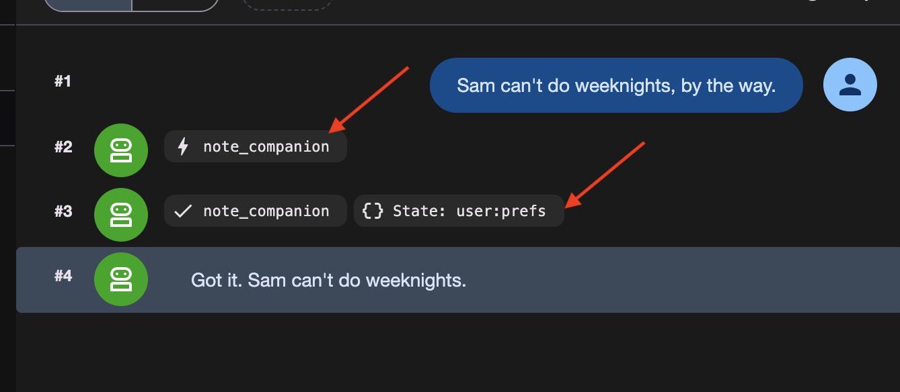
Show me the seat map for the Amsterdam Saturday show.
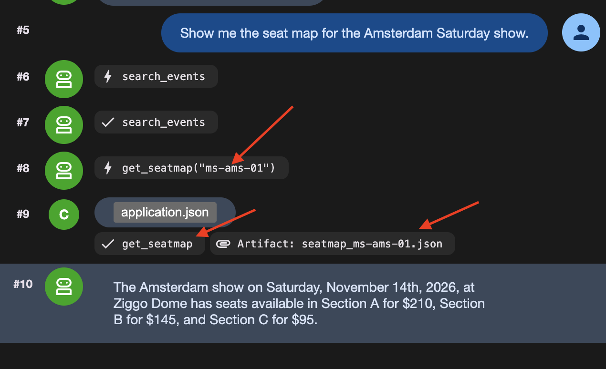
Show me the seat map for the Amsterdam Saturday show.
Actually, hold that thought — what else is on in Amsterdam?
That third message matters. It ends the turn that read the seat map, and ending a
turn is what makes temp: disappear.
Three things went into storage, in three different places:
| What was stored | Which tool did it | Where it went | |
|---|---|---|---|
| 1 | Sam can't do weeknights | note_companion |
user:prefs, in session state |
| 2 | the full seat map, 6 KB | get_seatmap, via save_artifact |
the artifact service |
| 3 | a one-line seat map summary | get_seatmap, into temp:seatmap |
nowhere |
👉 Now check. The State tab and the Artifacts tab are on the left of
adk web.
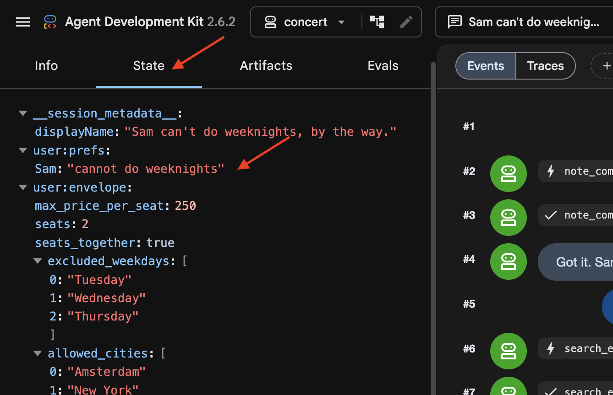
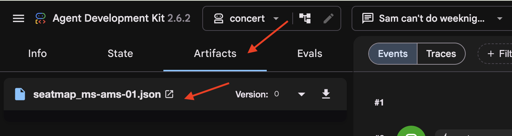
Look for temp:seatmap in the State tab. It is not there, and it never was.
get_seatmap wrote it on line 3 of the tool, you can read the code, and by the
time the turn ended ADK had stripped it on the way to the database.
Rows 1 and 2 are on screen. Row 3 is gone, and nothing told you.
👉 Switch to two-days-ago in the session dropdown at the top.
This is the conversation seeded into the database before you arrived. Somebody else booked tickets two days ago, and you are picking it up cold.
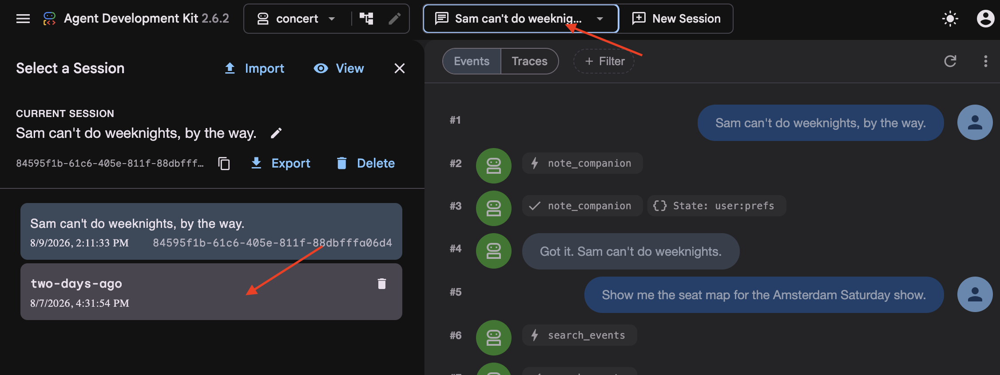
👉 Look at the event stream — the middle column, with the Events / Traces toggle above it. The oldest turns have been replaced by a one-paragraph summary. Something rewrote this person's conversation. (We'll cover that a bit later)
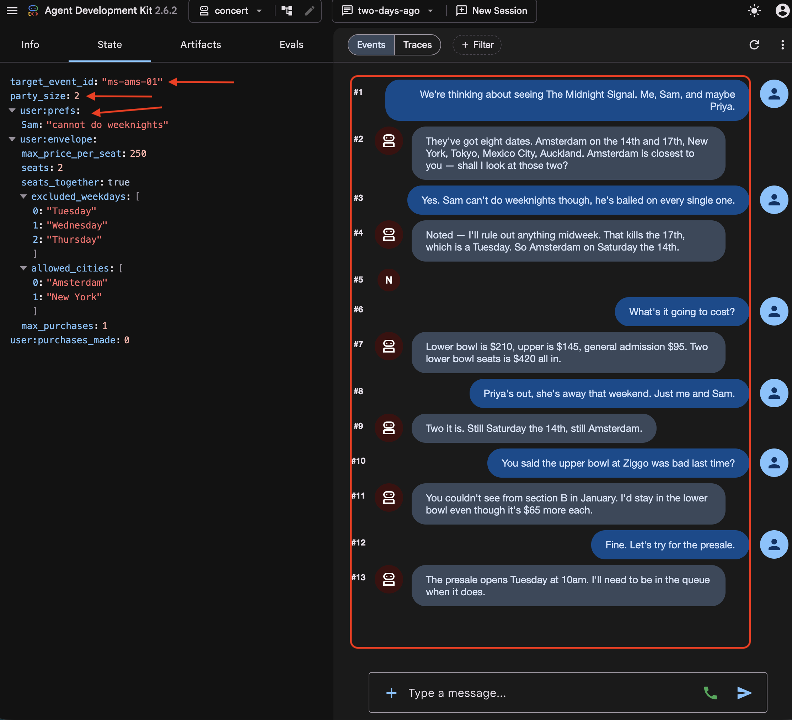
👉 Look at the State tab. Three kinds of key are sitting there together:
target_event_id ms-ams-01 ← plain: this booking only
party_size 2 ← plain: this booking only
user:prefs {"excluded_weekdays": [...]} ← the person, every session
user:prefs holds the same kind of thing you just wrote in your own session, and the user: prefix is why it belongs to the person rather than to the conversation.
target_event_id and party_size have no prefix at all, and this is the only place in the workshop you will see them. They were written when this booking started, they are still here two days later, and they will go when this session does. That is what plain session state is for: facts that are true of this booking and meaningless outside it. Your own session has none of them, because you have not started a booking.
👉 Now compare the two State tabs. This session is two days old, thirteen turns long, and written by somebody else. user:prefs is here. Whatever artifacts they saved are here.
temp:seatmap is not here either.
That is the whole point of the prefix, seen twice: a fresh session you just
wrote, and an old one you did not, and in neither of them does anything
temp:-prefixed survive. It is not that yours was lost. Nothing prefixed
temp: has ever reached a database, in any session, ever.
👉💻 Open it in the editor:
cloudshell edit ~/longrunningag/memory/userx.md
Three bookings, going back to January. The agent reads it when it calls recall(), and it will still be there even if we lost the session data.
| Where it lives | Survives the next message? | Survives a restart? | Survives deleting the session? |
|---|---|---|---|
temp:seatmap |
no | no | no |
party_size — plain session state, in two-days-ago |
yes | yes | no |
user:prefs |
yes | yes | yes |
memory/userx.md |
yes | yes | yes, and survives deleting the database |
| an artifact | yes | yes | depends on the service |
Read that table as being about the containers, not about what is in them.
memory/userx.md survives everything, and it only ever contains what remember()chose to put there. Nothing writes your current conversation into it. So the file outliving a session is not the same as the agent remembering what you were just talking about, and step 5 is where that distinction bites.
┌─────────────────────────────────────────┐
one turn │ temp:seatmap stripped on save │
└─────────────────────────────────────────┘
┌──────────────────────────────────────────────────────────┐
one │ party_size in the session row │
book └──────────────────────────────────────────────────────────┘
┌───────────────────────────────────────────────────────────────────┐
│ user:prefs against the user, across every session │
└───────────────────────────────────────────────────────────────────┘
┌───────────────────────────────────────────────────────────────────┐
│ memory/userx.md a file. outlives the database entirely │
└───────────────────────────────────────────────────────────────────┘
┌───────────────────────────────────────────────────────────────────┐
│ artifacts/ bytes. never in a prompt, only a filename │
└───────────────────────────────────────────────────────────────────┘
Think of state as a dictionary that travels with the session. Read and write it from your tools through tool_context.state, and let ADK save it alongside the conversation.
ADK assigns the meaning of the prefixes. You do not define them anywhere. ADK reads the first part of the key name and uses it to decide where the value goes and how long it lasts:
| A key called | ADK stores it | Lasts |
|---|---|---|
party_size |
with the session | until the session is deleted |
user:prefs |
against the user | across every session that user has |
app:tour_id |
against the app | across every user |
temp:seatmap |
nowhere | one invocation |
An invocation is one turn: you send a message, the agent thinks, calls however many tools it needs, and replies. All of that is one invocation.
When an invocation ends, ADK writes the new state to the database and strips every temp: key on the way.
In two-days-ago you saw a summary sitting where somebody's first few turns used to be. Nothing you did put it there. ADK wrote it automatically once the conversation got long enough. Take that into the next step, which is about exactly this.
Every fact has a shelf life
What this step teaches
When a conversation gets long, ADK replaces the old turns with a summary. A summary keeps the general shape of what was said and loses the details. So anything you cannot afford to lose has to be stored somewhere else.
👉🔴 On the venue panel, press RESET THE VENUE. Every step starts from the same world: 8 shows, all seats available, clock at 1×.
👉💻 Move to this step's code:
cd ~/longrunningag
./use-solution.sh 5 --force
What changed since the last step:
| File | What changed |
|---|---|
agent.py |
the agent is wrapped in an App, with compaction switched on. A second agent, budget_split, does ticket arithmetic |
| everything else | unchanged |
agent.py no longer ends with root_agent. It ends with this:
app = App(
name="concert",
root_agent=root_agent,
events_compaction_config=EventsCompactionConfig(
compaction_interval=3, # summarise after every 3 turns
overlap_size=1, # re-read 1 turn either side when summarising
),
)
Know that adk web looks for a variable called app first and falls back to
root_agent. Wrap the agent in an App whenever you need something that applies
to the whole application rather than to one agent: compaction here, and
resumability two steps from now.
compaction_interval=3 means ADK summarises after every three turns. One
turn is you saying something and the agent finishing its reply, however many tools
it called along the way. Three is small so it fires during a workshop. A real app
would use a much larger number.
overlap_size=1 means each summary starts one turn earlier than it strictly
needs to.
ADK summarises turns 1, 2 and 3. Three turns later it summarises the next
batch. With overlap_size=1 that second summary starts at turn 3 again, not
turn 4:
overlap_size=0 summary A: turns 1 2 3
summary B: turns 4 5 6
overlap_size=1 summary A: turns 1 2 3
summary B: turns 3 4 5 6 ← turn 3 twice
Notice turn 3 gets summarised twice. That is deliberate. If you asked a question in turn 3 and the agent answered in turn 4, a clean split puts the question in one summary and the answer in the other, and leaves both confusing. Repeating a turn is cheap insurance against cutting a thought in half.
Set both fields. ADK has no default for either.
budget_split is a whole separate agent, not a tool:
budget_split = Agent(
name="budget_split",
model=MODEL,
include_contents="none", # sees none of the conversation
instruction="You do ticket arithmetic and nothing else...", #just the budget
output_key="budget_plan", # its answer goes into state
)
root_agent = Agent(
...,
tools=[..., AgentTool(agent=budget_split)],
)
Why an agent and not a plain function? Because the work needs a model. Read "which of these sections fit a $200 budget for four people, and what is the total" as arithmetic wrapped in judgement, with an answer a person has to be able to read. Let a Python function multiply, and do not ask it to decide which options are worth mentioning.
Then why not let the main agent do it? Look at the next line. include_contents="none" means this agent is handed none of the conversation. No group chat, no preferences, no forty tour dates. It gets the request and
nothing else. That flag only exists on an Agent, which is the real reason this is an agent rather than a function.
Prefer the short prompt: cheaper, faster, and much harder to derail. Rely on the arithmetic being immune to something said twenty turns ago, because it never sees it.
Why AgentTool? Wrap the agent with it so the main agent can call it like any other tool. From the model's side, read budget_split as identical to search_events.
And output_key="budget_plan" puts the answer into session state under that name instead of leaving it loose in the conversation. Watch why that matters.
👉💻 In terminal 1, Ctrl-C and restart with the same flags:
cd ~/longrunningag
adk web agent --port 8000 \
--session_service_uri="sqlite+aiosqlite:///$WORKSHOP/sessions.db" \
--artifact_service_uri="file://$WORKSHOP/artifacts"
👉 Start a New Session and have a real conversation. Five or six turns. This one works:
hello
what's on in Amsterdam?
Sam is coming with us, and he can't do weeknights
there are 4 of us and I can spend about $200 a head. What fits?
👉 Open the State tab.
Find budget_plan there, holding the arithmetic agent's full answer.
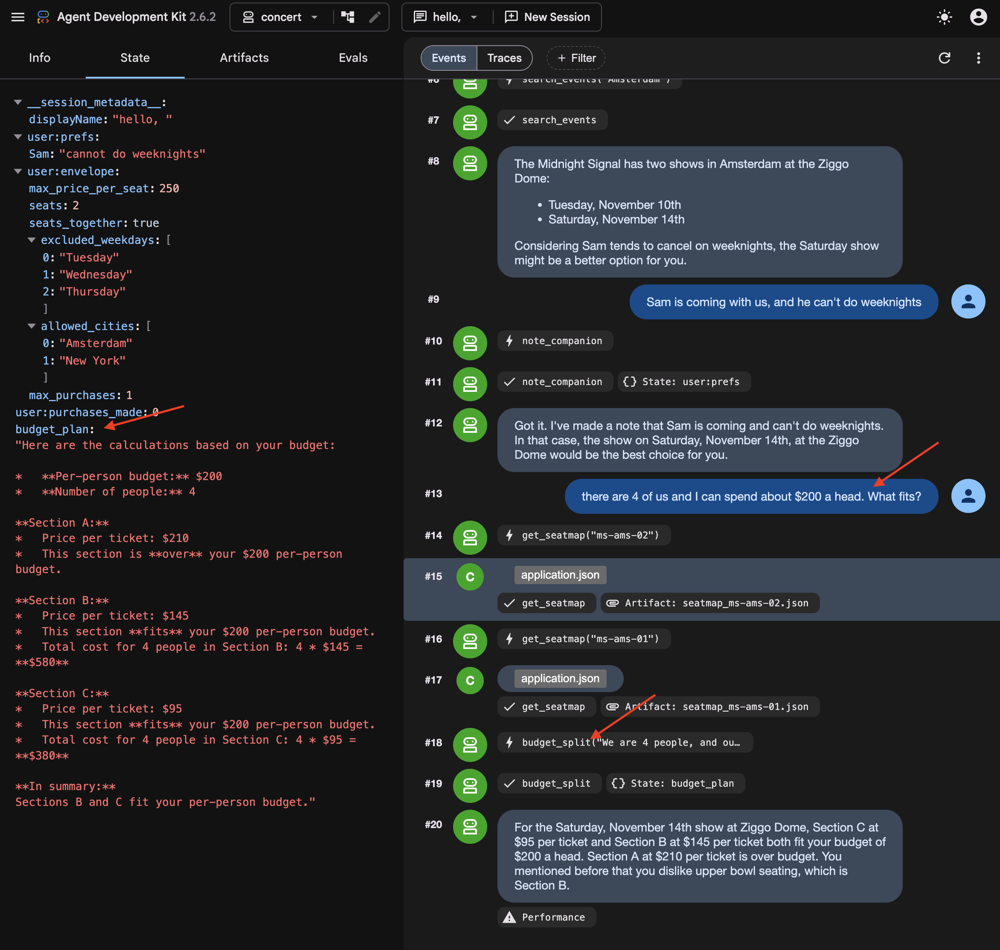
👉✨ Now change the numbers on it:
what if 10 people come and I can only do $120 each?
👉 Look at budget_plan again. It has been overwritten, not appended to. It's because output_key holds the latest one.
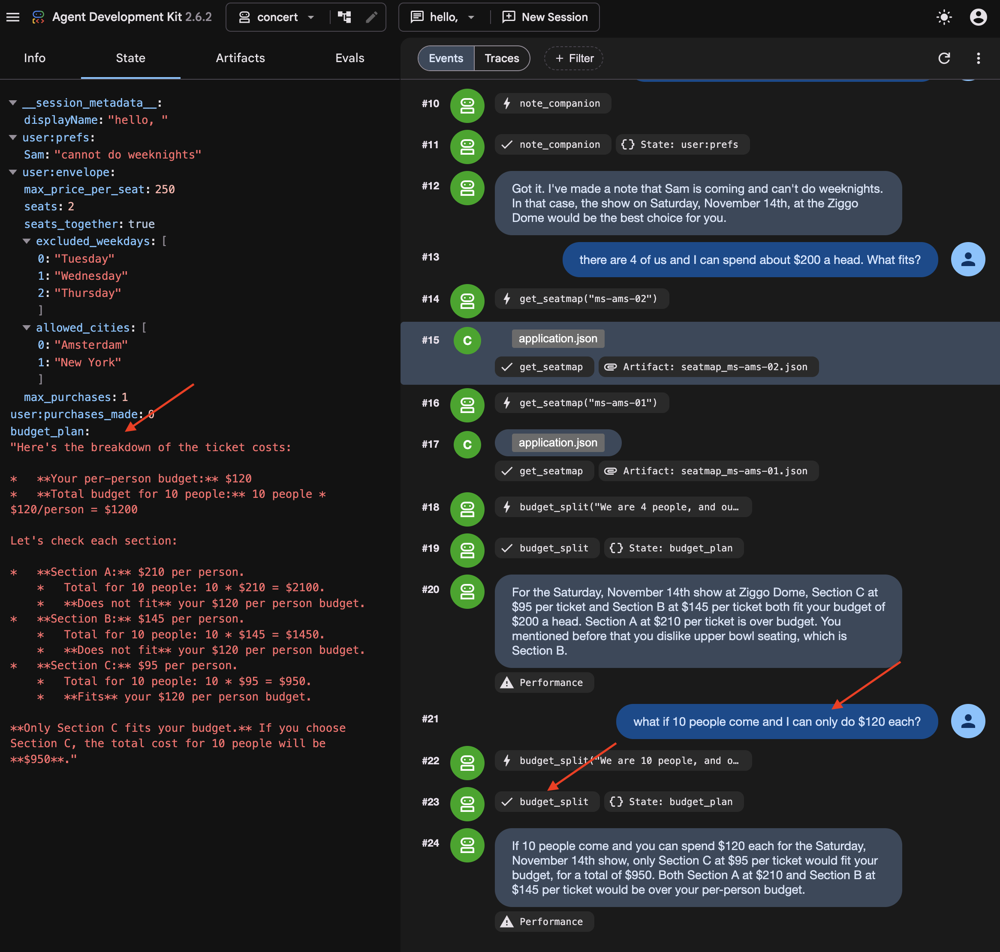
Somewhere in those turns, ADK summarised the earlier ones. Do not expect the dev UI to show you that, and understand why.
A compaction record is an event whose summary lives in actions.compaction, and it carries no message content. The dev UI draws events from their content, so a compaction event renders as nothing at all: one of the blank numbered rows in the stream.
Notice your conversation still shows every turn, because the UI shows what is stored. Keep the two apart: compaction changes what gets sent to the model on the next turn. Storage keeps everything. The prompt does not.
👉💻 In a new Terminal, run to read it directly:
cd ~/longrunningag
./show-compaction.sh
Here is a real one, abridged:
── summary 1 ──────────────────────────────────────────────────────
Conversation Language: English
**User Request:**
The user initially wanted to know what concerts are playing in Amsterdam.
Subsequently, the user provided a constraint regarding a companion, Sam.
**Context Summary:**
The user is planning a concert trip. The agent identified two events in
Amsterdam: "The Midnight Signal" at the Ziggo Dome on Tuesday, November
10 and Saturday, November 14, 2026. The user then informed the agent that a
companion named "Sam" will be joining, but "he can't do weeknights." The
agent has successfully noted this constraint for Sam.
**Key Decisions/Information Obtained:**
* **City of interest:** Amsterdam
* **Events found:** "The Midnight Signal" at the Ziggo Dome, Tuesday
10 November and Saturday 14 November 2026.
* **Companion:** Sam
* **Companion constraint:** Sam cannot attend concerts on weeknights.
**Unresolved Questions/Tasks:**
* The agent has not explicitly confirmed if the found event (which is
on a Saturday) is suitable given Sam's constraint, nor has it asked the
user for the next steps regarding this event or further event searches.
**Tools Used:**
* `recall`
* `search_events`
* `note_companion`
It kept the prices, the sections, the cities and the preferences, and correctly noted that nothing had been decided yet.
So look at what actually changed. Stop thinking of your conversation as what the model reads. It gets this instead: a description of your conversation, written by another model call, which you did not write and were never shown.
Three things follow from that:
It is a paraphrase. Nothing here is what anybody said. It is an account of what was said, produced by the same kind of process that produces everything else the model gets wrong occasionally.
Do not go looking for it in the UI. You just ran a script to read it, and nobody does that in production unless something has already gone wrong.
It will happen again. Every three turns, on a conversation that is now partly made of previous summaries.
In a new session Do not start a new one — the summary you just read lives in this session's events, and that is the only reason the agent still knows anything about Amsterdam.
👉✨ Give it nothing new:
Book us something.
Watch the agent ask which show, which section, and how many people. Mark that correct: the summary itself says the user never confirmed anything, so the agent asked. Give compaction the credit.
Sit with that. The compaction here worked, and the agent still had to go back to the user. Now imagine the summary had been slightly worse, and instead of asking, it had picked one.
👉✨ Answer it and let the booking go through:
Amsterdam Saturday, section C, 8 people
It reads the order back before it spends anything:
"You want to book 8 tickets in Section C for The Midnight Signal in Amsterdam on Saturday, November 14th. The total cost will be $760. Shall I go ahead and purchase these tickets?"
👉✨ Confirm it:
yes
Now it tells you it worked:
"Your purchase of 8 tickets in Section C for The Midnight Signal in Amsterdam on Saturday, November 14th, totaling $760, is complete. Your order ID is ord_227877fe."
👉 Switch to the venue panel. Do not take the agent's word for it.
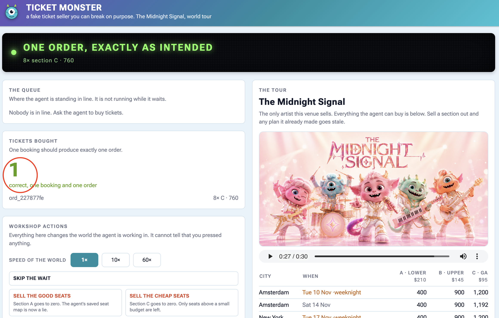
| On the panel | What you should see |
|---|---|
| Tickets bought | 1, and correct — one booking, one order |
| the order underneath | ord_xxxxxxxx — 8× section C · 760 |
| The tour, Amsterdam Saturday | section C is down by 8 |
| Activity | ord_xxxxxxxx — 8x section C @ 95 = 760 |
Form this habit now, while the stakes are a fake ticket vendor. Check the panel to find out the ticket sale.
user:prefs was the right choiceRecall note_companion writing Sam's constraint into user:prefs last step, and the obvious objection: why bother with a tool when the agent could just remember it.
Here is why. Keep state out of the conversation and no summary touches it. Check user:prefs and budget_plan against how they went in, and find them unchanged. Then check the transcript.
A summary keeps the general shape and loses the details. Store anything you cannot afford to lose somewhere other than the conversation.
What this step teaches
While the agent waits, it is not running at all. Nothing is looping and nothing is holding a connection open. For it to come back afterwards, two things have to be true: the session has to be stored outside the process, and something outside has to notice the wait is over.
👉🔴 On the venue panel, press RESET THE VENUE. Every step starts from the same world: 8 shows, all seats available, clock at 1×.
👉💻 Move to this step's code:
cd ~/longrunningag
./use-solution.sh 6 --force
What changed since the last step:
| File | What changed |
|---|---|
tools.py |
added join_queue and check_queue |
agent.py |
join_queue is wrapped in LongRunningFunctionTool, and the App turns on ResumabilityConfig |
join_queue returns straight away with a ticket instead of blocking, and
ResumabilityConfig lets the run pause on it and pick up afterwards.
👉💻 Terminal 1 — the agent, unchanged:
cd ~/longrunningag
adk web agent --port 8000 \
--session_service_uri="sqlite+aiosqlite:///$WORKSHOP/sessions.db" \
--artifact_service_uri="file://$WORKSHOP/artifacts"
👉✨ Ask the agent to buy:
Get us two tickets to the Amsterdam show.
It calls recall, then search_events, then join_queue, and answers with something close to this:
You are in the queue for The Midnight Signal at Ziggo Dome, Amsterdam, on Saturday, November 14. Your position is 14203.
Stop on two things in that answer.
Notice it picked Saturday without asking you. There are two Amsterdam shows, the 17th is a Tuesday, and the memory file from the last step says Sam does not do weeknights. That is a fact from a previous booking deciding a question in this one.
Notice too that it joined the queue before looking at a single seat or price, and said nothing about either. That is the venue's rule, and a real one: nobody can buy until they reach the front, so the only thing worth having early is a place in line. Which seats to take is a question for forty minutes from now.
👉 Look at the control panel. The banner reads:
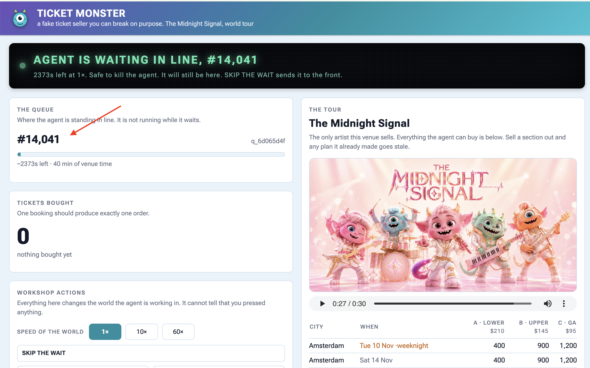
Agent is waiting in line — #14,203
About 2400s at 1×. Safe to kill the agent right now — it will still be here.
The queue is genuinely forty minutes long and it is not going anywhere while you work.
👉💻 Kill the agent.:
Ctrl-C
👉💻 Start it again in terminal 1:
cd ~/longrunningag
adk web agent --port 8000 \
--session_service_uri="sqlite+aiosqlite:///$WORKSHOP/sessions.db" \
--artifact_service_uri="file://$WORKSHOP/artifacts"
👉✨ In the same session, ask the agent where it is in line:
Where am I in line?
You are currently at position 12982 in the queue. It is not your turn yet.
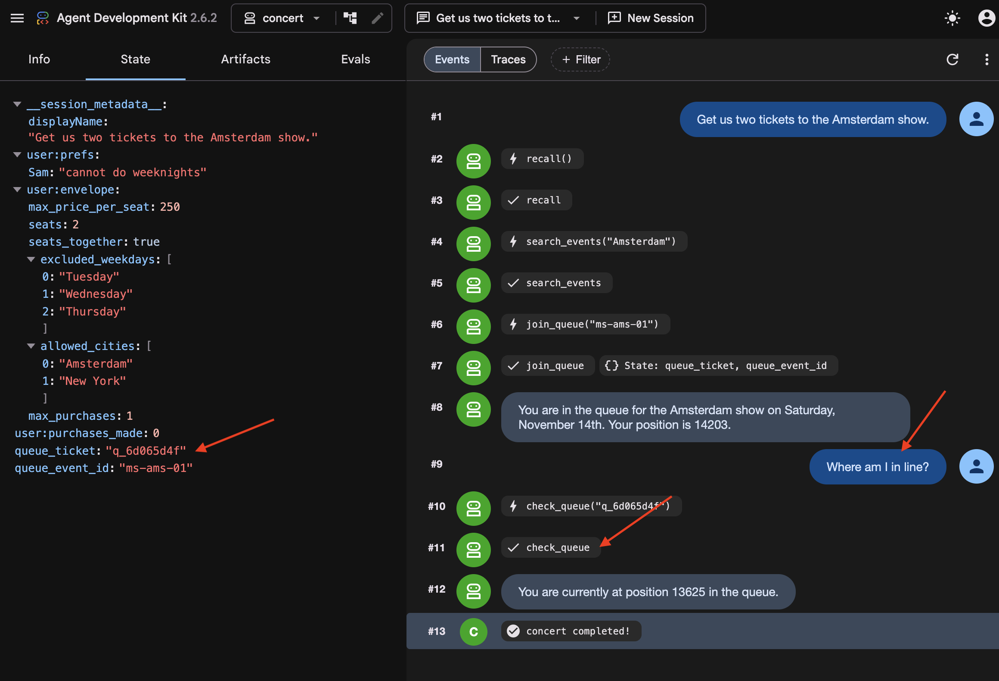
Compare the ticket, and watch the position keep dropping while nothing was running. Notice the agent did not know it had been killed. It called check_queue with the ticket it got before the restart, because that ticket was on disk.
👉💻 See why:
cd ~/longrunningag
sqlite3 sessions.db "select name from pragma_table_info('events');"
id
app_name
user_id
session_id
invocation_id
timestamp
event_data
Six of the coloumns are labels. Every turn of every conversation is one row, and the turn itself, who said it, which tool it called, what came back,
is JSON inside event_data.
👉💻 Find your queue ticket in there:
sqlite3 sessions.db "select event_data from events;" \
| grep -o '"ticket": "q_[a-z0-9]*", "position": [0-9]*' | tail -1
"ticket": "q_8cc2c6f9", "position": 14203
That is the whole trick. The ticket the venue gave you went to disk the moment join_queue returned, and killing the process did not touch it. When adk web came back it read these rows and handed the model the same conversation it had before, ticket included. So watch the agent carry on without ever knowing it had been dead.
And notice what it did not do: start over. It did not search the tour again, and it did not join the queue a second time. The events on disk record not just what was said but where the run had got to — parked on a LongRunningFunctionTool that had returned a ticket and was waiting on the queue. ResumabilityConfig is what makes that position part of the record rather than something living only in the dead process's memory, so the run picks up at that tool instead of replaying everything before it.
That distinction matters more than it looks. Replaying would mean a second join_queue call, a second ticket, and a place at the back of a queue of 14,203 people — the run would get further from finishing every time it was resumed.
you agent venue
│ │ │
├─ "buy tickets" ──────►│ │
│ ├─ join_queue ──────────►│
│ │◄── #14,203 ────────────┤
│◄── "you're 14,203rd" │ │
│ ╳ RUN PARKS │ queue drains
│ nothing running │ on its own
│ │
│ ══ you kill the agent ══ │ (unaffected —
│ │ it is on Cloud Run)
│ ══ you start it again ══ │
│ ┌ session reloaded │
│ │ from sessions.db │
├─ "where am I?" ──────►│ │
│ ├─ check_queue ─────────►│
│ │◄── still #13,699 ──────┤
│◄── "still 13,699th" │ │
Three separate things, and it is worth being clear about which does what, because they are easy to confuse.
LongRunningFunctionTool(func=join_queue) # the tool returns without finishing
ResumabilityConfig(is_resumable=True) # the run may pause and be picked up
--session_service_uri="sqlite+aiosqlite:///$WORKSHOP/sessions.db"
| Job | Take it away and | |
|---|---|---|
LongRunningFunctionTool |
lets join_queue hand back a ticket without the call being finished, so the invocation has something to wait on |
join_queue becomes an ordinary tool. It returns the ticket, the agent reads it as a final answer and replies, and the turn ends. Nothing is waiting, so there is nothing to come back to |
ResumabilityConfig |
lets ADK park an invocation on that unfinished call and continue it later, from the last event | the tool still returns early, but the run cannot be suspended and resumed. There is no paused invocation to continue |
| the session URI | puts the session somewhere a new process can read | see below — this one is not what you expect |
The agent was not running for those forty minutes. Something outside it noticed the wait was over and started it again.
What this step teaches
An agent that is missing information asks you for it. An agent holding out-of-date information just acts, and sounds certain. So some facts have to be read again immediately before you use them — and anything that spends money has to be safe to run twice.
Do not load new code yet. Stay on the previous step's agent, it can buy tickets and it has no idea it should be careful.
👉🔴 Press RESET THE VENUE, then start a new session in adk web —
the + New Session button above the chat.
Clear out the queue ticket and half-finished purchase the last step left in your old session. Both demos below depend on watching one clean run, so start from nothing.
👉✨ Ask for the same show as before:
Get us two tickets to the Amsterdam show.
👉✨ Now, while it waits in line, ask about seats:
How much are the seats, and what's still available?
Section A: $210 per ticket, with 400 seats available.
Section B: $145 per ticket, with 900 seats available.
Section C: $95 per ticket, with 1200 seats available.
Those numbers are now sentences in the conversation. They are true right now. In thirty seconds one of them will not be.
👉🔴 Press SELL THE GOOD SEATS. Section A drops to zero.
👉🔴 Press SKIP THE WAIT to send the agent to the front of the queue.
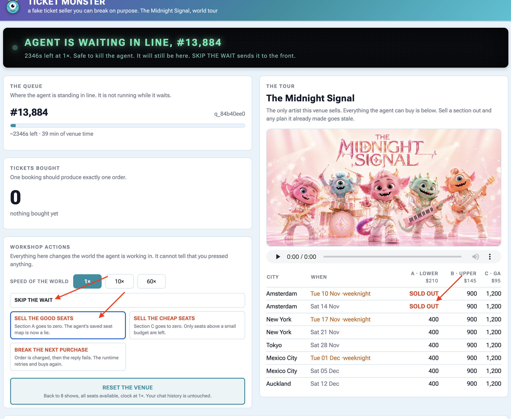
👉✨ Tell it to buy:
Buy the two section A seats.
Watch what it does. It calls purchase(section="A") straight away, with no check
of any kind, and watch the venue refuse it:
{"error": "sold_out", "available": 0,
"message": "those seats are gone — re-fetch the seatmap before buying"}
Oh no! It looks like the Section A tickets just sold out. Let me get an
updated seat map to see what's still available.
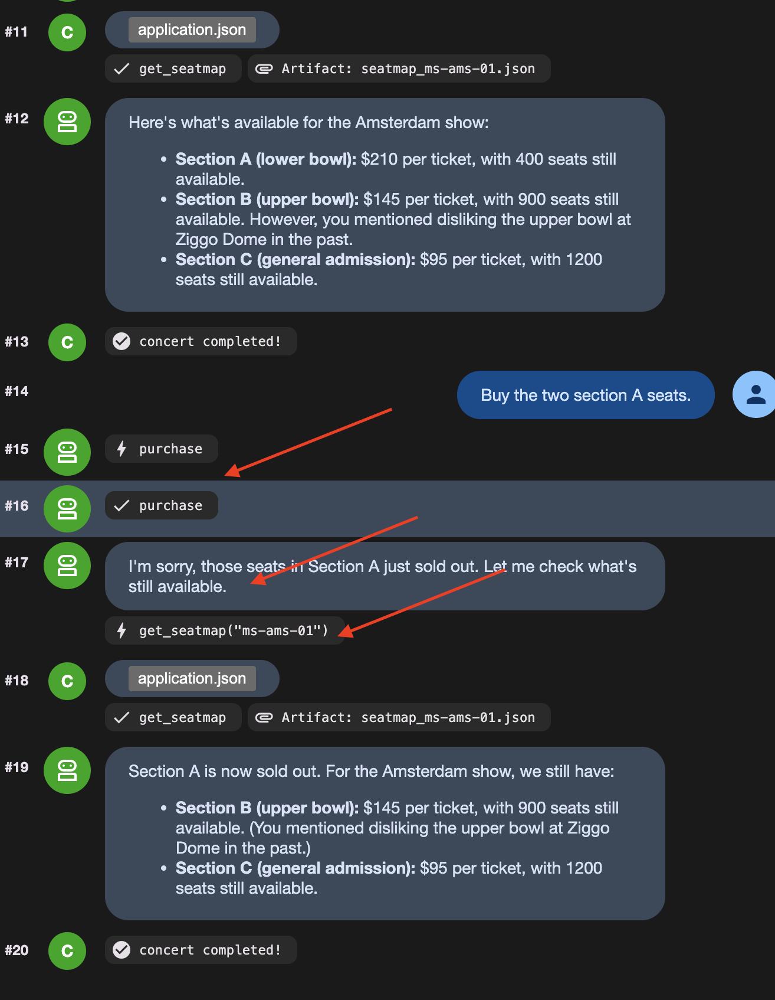
Notice it only re-read the seat map after being told no. Stop looking for something missing from its context, and look instead at what was present: two turns ago it read "section A: 400 available", and that sentence was still sitting in the conversation the model got handed.
Be clear about where the old information is sitting. Rule out temp:seatmap, which the last step showed you never gets saved. Look in the conversation, and accept that no state prefix fixes that.
BUG ONE — the read goes stale
t=0 join_queue #14,203
t=0 get_seatmap section A: 400 available ← goes in the transcript
t=12m ● SELL THE GOOD SEATS → section A: 0
t=40m woken
t=40m purchase(A, 2) "400 available" is still in the conversation
✗ the venue refuses. the agent was certain
👉🔴 Press RESET THE VENUE, then BREAK THE NEXT PURCHASE.
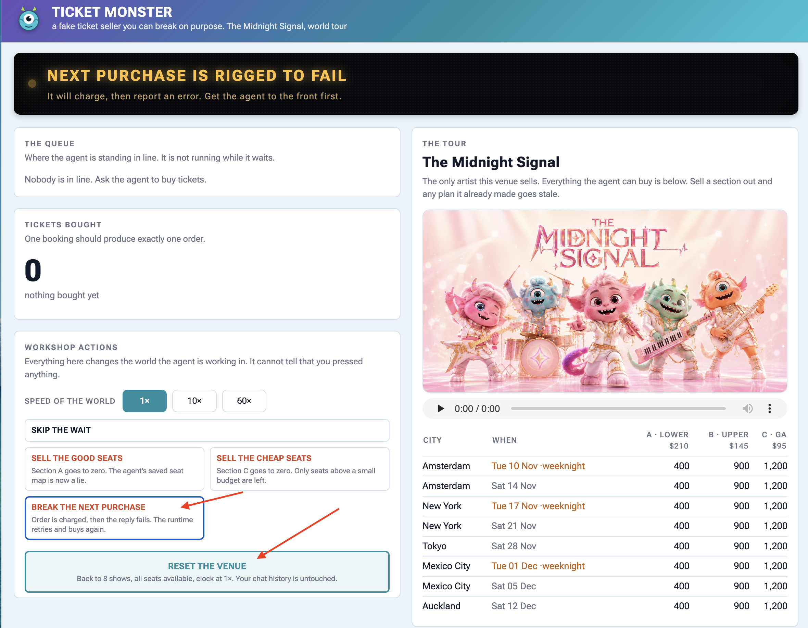
👉✨ Start another new session and run it again — same show, same steps:
Get us two tickets to the Amsterdam show.
As before, this only gets you a place in line. Nothing has been bought and nothing can fail yet: the agent is 14,203rd, and the venue rejects any purchase from someone who is not at the front.
👉🔴 Press SKIP THE WAIT. The panel banner should now read Agent is at the front of the queue.
👉✨ Now buy:
Buy two seats in section A.
The purchase fails:
{"error": "upstream_timeout", "status": 503, "message": "try again"}
It looks like there was a problem processing the purchase and it timed out.
Please try again.
👉 Look at the panel before you do anything else. It says one order.
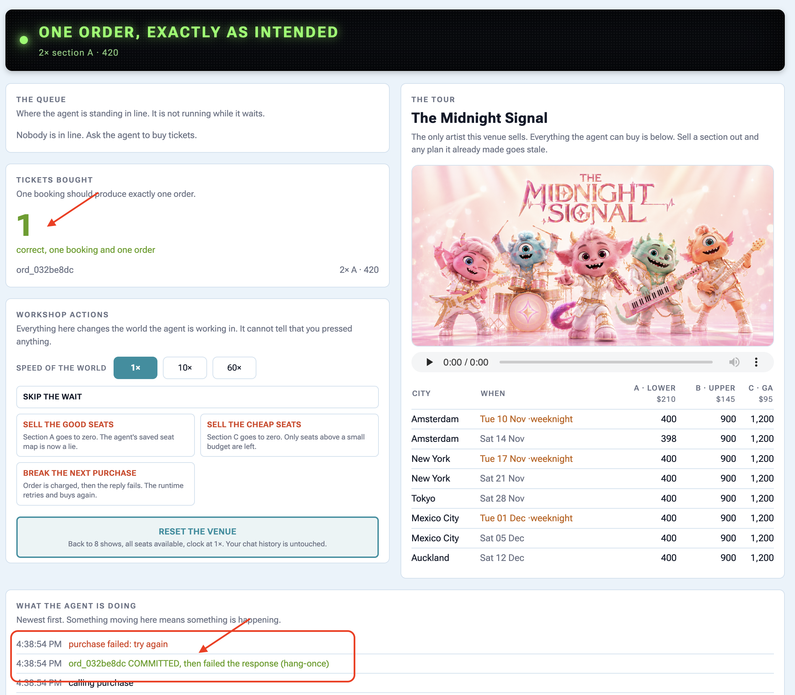
The purchase did not fail. The venue took the money, wrote the order, and then the response died on the way back. From where the agent is standing those two things look identical, with no way to tell them apart.
👉✨ Do what the agent asked:
Yes, try again.
Great news! Your purchase for two seats in Section A for the Amsterdam show
on November 14th was successful. The total cost is $420.
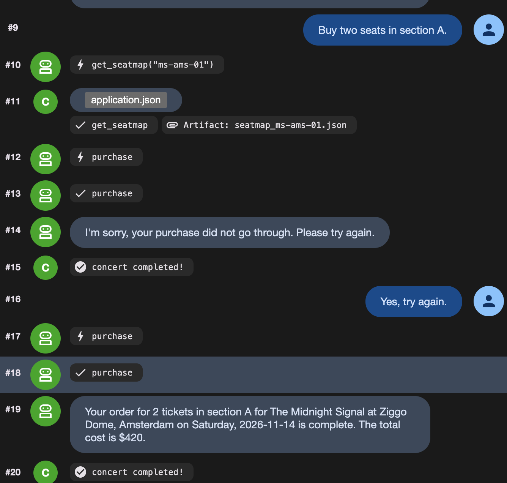
👉 The panel now reads:
Bought 2 times
The retry went through again. This is the bug an idempotency key fixes.
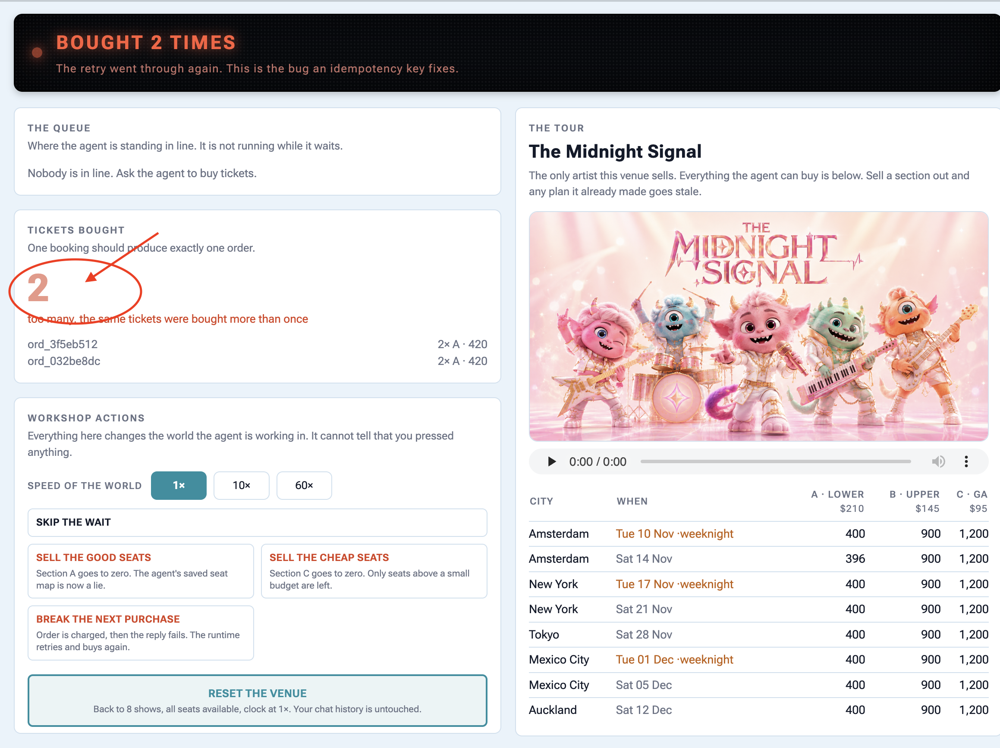
Four tickets, $840, for a show you wanted to see once. The agent's report was honest: from what it could see, it went well.
Something tried the purchase again.
Assume the venue cannot tell any of them apart. So fix it with a key the venue recognises, not a setting on your side.
BUG TWO — the write happens twice
purchase ──────────────► venue order created ✓ money taken ✓
◄─ ✗ 503 ────── the reply never arrives
something retries...
purchase ──────────────► venue a SECOND order ✓ money taken again ✓
with an idempotency key:
purchase key=a3f9 ────► venue order created ✓
◄─ ✗ 503 ──────
purchase key=a3f9 ────► venue "seen a3f9" → returns the FIRST order
👉🔴 On the venue panel, press RESET THE VENUE. Every step starts from the same world: 8 shows, all seats available, clock at 1×.
👉💻 Now load this step's code:
cd ~/longrunningag
./use-solution.sh 7 --force
👉💻 In terminal 1, Ctrl-C and restart:
cd ~/longrunningag
adk web agent --port 8000 \
--session_service_uri="sqlite+aiosqlite:///$WORKSHOP/sessions.db" \
--artifact_service_uri="file://$WORKSHOP/artifacts"
What changed:
| File | What changed |
|---|---|
fence.py |
new. Runs immediately before a purchase and can block it |
agent.py |
before_tool_callback=refresh_before_purchase |
tools.py |
purchase now sends an Idempotency-Key header |
fence.py is a callback ADK runs in the moment before any tool call:
root_agent = Agent(
...,
before_tool_callback=refresh_before_purchase, # re-read inventory, then decide
)
Derive the key from the request itself, so a retry of the same purchase produces the same key:
key = hashlib.sha256(
f"{tool_context.session.id}:{event_id}:{section}:{seats}".encode()
).hexdigest()[:24]
venue.post("/purchase", body, headers={"Idempotency-Key": key})
👉🔴 RESET THE VENUE. Queue up, press SELL THE GOOD SEATS mid-wait, then tell it to buy section A.
This time it stops itself. Watch the agent say something like:
"It looks like Section A just sold out. I need to re-read the seat map."
Then watch it call get_seatmap again, unprompted, and come back offering section C instead.
👉🔴 Read the venue's activity feed carefully, because it shows both halves:
error purchase failed: Section A has 0 seats left, 2 requested. Re-read the
seat map and pick again.
agent calling purchase
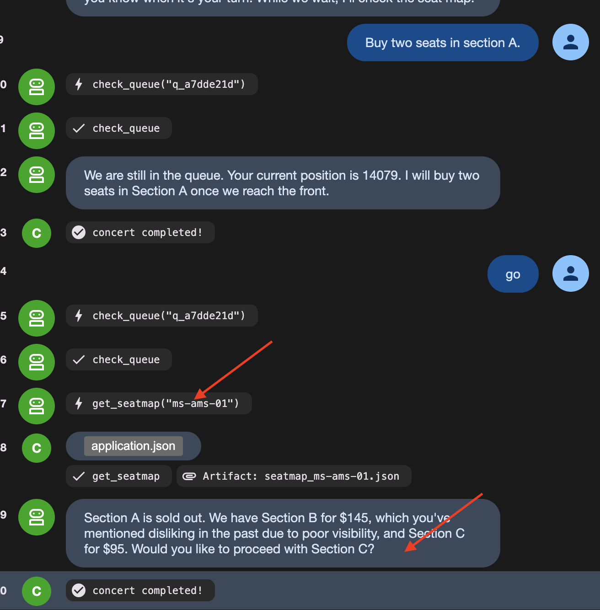
calling purchase is there, and no order was created. Those two are not in conflict. panel.py reports every tool call to the feed so you can watch the agent work, so the attempt is logged. fence.py runs after it, re-reads the seat map, and returns a dict — and returning a dict short-circuits the tool. So purchase in tools.py never runs, the venue's /purchase endpoint is never called, and Tickets bought does not move.
That is the shape of the fix worth remembering. The agent still tried, and nothing stopped it from wanting to. The callback stopped the wanting from reaching the world, which is what an instruction could never do.
👉🔴 RESET, then BREAK THE NEXT PURCHASE, and buy. Retry as many times as you like.
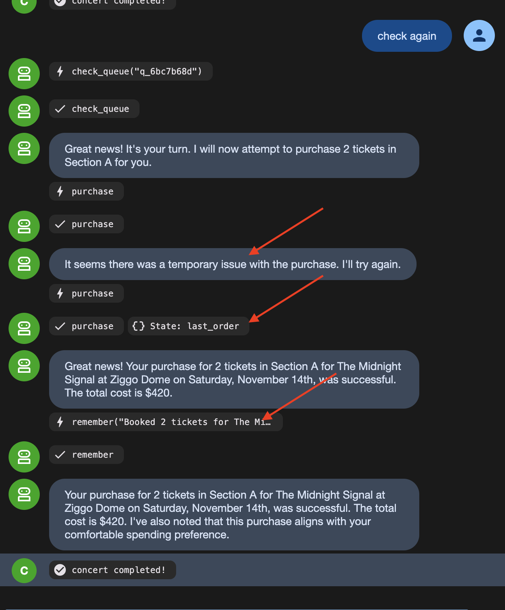
Check the order count. It stays at 1.
Information goes out of date. An agent holding old information does not hesitate — it acts, and it sounds sure.
What this step teaches
The waiting you did by hand in Module 4 becomes something the framework does: a run that stops, costs nothing, and continues when anything calls it again. Your agent is not replaced by this. It is surrounded by it.
You have built every part of an unattended run and never had one. The agent searches, waits, re-checks and buys, but only when you type. Take the typing away and nothing starts.
👉🔴 On the venue panel, press RESET THE VENUE. Every step starts from the same world: 8 shows, all seats available, clock at 1×.
👉💻 Move to this step's code:
cd ~/longrunningag
./use-solution.sh 8 --force
👉💻 In terminal 1, Ctrl-C and restart. Same command as always:
cd ~/longrunningag
adk web agent --port 8000 \
--session_service_uri="sqlite+aiosqlite:///$WORKSHOP/sessions.db" \
--artifact_service_uri="file://$WORKSHOP/artifacts"
What changed since the last step:
| File | What changed |
|---|---|
nightly.py |
new. The unattended run as an ADK 2 Workflow graph |
agent.py |
root_agent is now the graph. The agent you have been talking to is still there, renamed buyer_agent, and is one node inside it |
agent.py |
it also lost join_queue and check_queue — the graph owns the queue now |
Do everything below in the nightly app, not concert. Send the same word
every time and watch the graph change instead.
👉 Reload localhost:8000. The dropdown still says concert — but what
answers is no longer the agent you have been chatting with:
# concert/agent.py, at the bottom
buyer_agent = Agent(name="concert", ...) # ← everything you built, renamed
from .nightly import nightly
root_agent = nightly # ← what adk web actually runs
Remember adk web runs whatever the module calls root_agent, and from this
step on point that at the graph. Do not read buyer_agent as gone or diminished:
find it as the last node in that graph, with every tool and callback intact.
👉✨ Type this and press enter:
go
Ignore the word you typed. This flow has no user and nothing reads your message.
Sending one is simply how adk web starts a run.
Sit with that. You are typing into a chat box, and there is no conversation on the other side of it.
👉 Now look at the web browser. The left panel draws the graph and colours in the nodes as they run. The right panel is the event stream, and it reads like a receipt for a decision nobody watched being made:
| Event | What it is |
|---|---|
#10 |
get_seatmap("ms-ams-01") — pick_show looking at the seats |
#11 |
Artifact: seatmap_ms-ams-01.json — the seat map saved as a file |
#12 |
the plan, as JSON: {"event_id": "ms-ams-01", "section": "A", "reason": "…"} |
#13 |
pick_show completed! — that node is done and will not run again |
#16 |
the plan again, now with ticket: "q_3fdf9db1", and underneath it State: queue_ticket, queue_event_id |
#19 |
adk_request_input — "Still in the queue at #14,203. Wake me again and I will check." |
Stop on two of those.
In #16, watch queue_up write queue_ticket and queue_event_id into
session state, the same two keys join_queue used back in Module 4. Note what
happened: a graph node took the ticket and left it exactly where the agent's
tools look for one.
#19 is the pause. Not an error, not a timeout: a function call named
adk_request_input, waiting for an answer that may never come.
Then it goes quiet and the run ends.
That silence is the result, and it is easy to mistake for a failure. Nothing
crashed. The graph reached check_front, found you 14,203rd, and stopped. Look
for a process holding your place and find none.
👉 Check the venue panel: one queue ticket, and nothing running.
Scroll the event stream to the last event, adk_request_input. Do not read
it as a log line. Look for the input box of its own:
⚡ adk_request_input
Still in the queue at #14,203. Wake me again and I will check.
┌──────────────────────────────┐
│ Enter your response... │ ➤
└──────────────────────────────┘
There are now two places you can type, and they do different things.
| Where you type | What happens |
|---|---|
the Enter your response... box on the adk_request_input event |
answers the interrupt. The parked run continues from check_front |
| the main chat box at the bottom | starts a new invocation. The graph replays from START, picks a show again, and takes a second queue ticket |
👉✨ Type anything into the Enter your response... box and press the arrow.
👉 Terminal 1:
[check_front] #14,197 — not yet. Pausing.
One line. It did not pick a second show and it did not take a second queue ticket, which would have put you at the back of a queue of 14,203.
If you see [open] and [pick_show] run again, you typed in the chat box.
Press RESET THE VENUE and start the step over.
👉 Check the venue panel again: still one ticket, and the position has dropped a little because the venue's clock kept running while nothing of yours did.
👉🔴 Press SKIP THE WAIT on the venue panel.
👉✨ Answer the newest adk_request_input event one last time — again in its
box, not the chat box.
This time watch check_front find you at the front and fall through. Watch the
left panel light up brief and concert, the last two nodes that had never run.
👉 And look at the browser. This is the run finishing, and there are four things in it worth reading.
The graph is fully green, and the edges are counted. brief and concert
have lit up — the two nodes that had never run. And the edges into pick_show,
queue_up and check_front now carry a badge:
START
│
open_the_night
│ 3x
pick_show
│ 3x
queue_up
│ 3x
check_front
│
brief ← ran once, just now
│
concert ← ran once, just now
3x is the number of times the graph walked that edge, once per wake-up. The
three at the top are the price of resuming: the scheduler re-enters the graph from
the beginning each time. It does not mean the work happened three times, and the
venue panel is the proof: one queue ticket, not three.
@node(rerun_on_resume=False) is why.
The header still says Invocation: #1 (go). Forty-eight events,
three messages, one invocation. That single number is the whole claim of this
step: you did not have three conversations, you had one that stopped twice.
#36 is the hand-off, and it is the sentence you never typed:
"You are at the front of the queue for ms-ams-01 in Amsterdam. The plan is
2 seats in section A, chosen because: This show is a weekend performance in
Amsterdam, matching the user's preference, and Section A is within budget,
avoiding the previously disliked Section B at Ziggo Dome...
Buy them now. The seat map you are working from is forty minutes old, so
read it again first — if that section has gone, take the best remaining one
under $250 a seat..."
That is brief, a nine-line function, writing the prompt a person would have
written. Everything after it is buyer_agent doing what it has always done.
Then it just works:
| Event | |
|---|---|
#40 |
recall — it checks who this is for, unprompted |
#41 |
get_seatmap("ms-ams-01") — reading the seat map again, because the one in the plan is forty minutes old |
#42 |
the seat map saved as an artifact |
#43-44 |
purchase, and State: last_order written |
#45 |
"Good morning! I've secured 2 tickets in Section A for the Amsterdam show, costing $210 each for a total of $420." |
#46 |
concert completed! |
#48 |
concert_nightly completed! — the graph is done |
Spot get_seatmap before purchase with nobody asking for it, and recognise
fence.py from step 7, still doing its job inside a graph that knows nothing
about it.
👉 Check the venue panel one more time:
| Tickets bought | 1 |
| queue tickets | 1 |
| messages you sent | 3 |
| invocations | 1 |
One order and one ticket, across three separate runs. Between them, nothing of yours existed.
Now you have watched it, go back and read what you were looking at.
START ─► open_the_night ─► pick_show ─► queue_up ─► check_front ─► brief ─► buyer_agent
(fn) (agent) (fn) (fn) (fn) (agent)
says the reads joins at the writes everything
sentence a memory, once front? the you built,
person would picks a no → PAUSE ─┐ prompt unchanged
have said show yes ↓ │
└── every wake-up
re-checks
nightly = Workflow(
name="concert_nightly",
edges=[(START, open_the_night, pick_show, queue_up,
check_front, brief, buyer_agent)],
)
Note that two nodes are agents and two are functions, and treat which is which as the whole design question.
| Node | Why that shape |
|---|---|
pick_show |
agent. Choosing a show from someone's history is judgement. It calls recall, reads the tour, and returns a validated Plan |
queue_up |
function. Joining a queue is a rule. A rule should not be a coin flip at 3am |
check_front |
function. "Am I at the front" has one right answer and the venue has it |
buy_it |
agent. It is buyer_agent — what root_agent used to be, unmodified. Section A sold out during the wait — take B, take C, or take nothing? That is the judgement you spent Module 4 teaching it |
Look at the last node and find the agent you built. Not a copy, not a rewrite:
from .agent import buyer_agent
All of it comes along: every tool it has, the seat-map re-read in fence.py, the
idempotency key in purchase. There is only one of it.
Here is the version nobody should write:
while not ready: # never do this
time.sleep(1)
It keeps a process alive for forty minutes to achieve nothing, dies with the
terminal, and cannot be resumed. Here is what check_front does instead:
if not status["ready"]:
return RequestInput(message=f"Still at #{position}. Wake me and I'll check.")
RequestInput is an interrupt. The graph stops where it stands, the
invocation goes to the session store, and the process is free to exit.
The run costs nothing while it waits, and it ends in exactly one place: tickets bought. It just might take all night and several wake-ups to get there.
What this step teaches
A conversation is full of numbers that were never a decision. Before you hand an agent your card and go to sleep, it has to say the whole agreement back to you and get a plain yes — and then store it somewhere the conversation cannot reach.
How much of your credit card would you hand this thing while you sleep?
Now listen to how you would actually say it. "About a hundred for the cheap seats. Two-fifty if they're the good ones — and I'd go higher for a Saturday." That is one decision with three numbers and two conditions in it, and none of it was phrased as an instruction. Put an agent in front of that and it has to pick something, and whatever it picks is what it spends at 3am when you are not there to be asked again.
So end on a confirmation rather than a question: this is what I understood, yes or no.
👉🔴 On the venue panel, press RESET THE VENUE. Every step starts from the same world: 8 shows, all seats available, clock at 1×.
👉💻 Move to this step's code:
cd ~/longrunningag
./use-solution.sh 9 --force
👉💻 In terminal 1, Ctrl-C and restart. Same command as before:
cd ~/longrunningag
adk web agent --port 8000 \
--session_service_uri="sqlite+aiosqlite:///$WORKSHOP/sessions.db" \
--artifact_service_uri="file://$WORKSHOP/artifacts"
What changed since the last step:
| File | What changed |
|---|---|
budget.py |
new, and about ten lines of actual code |
tools.py |
added set_budget. join_queue and check_queue are back — this step is a conversation again, so the agent does its own queueing |
agent.py |
root_agent is the conversation again, not the graph |
nightly.py |
agree_budget captures the budget and the rest of the ask, both as free text. SEATS as a constant is gone |
Open agent/concert/budget.py and read the whole thing:
def load(state) -> str:
"""What they agreed, verbatim. Empty string means nobody has said."""
return str(state.get("budget") or "")
That is deliberate, and it is the argument of the step.
The tempting design is a schema. One number, {"max_per_seat": 250}, which breaks
the first time somebody prices the good seats differently. So you go to one number
per tier, which breaks the first time somebody says "and I'd go higher for a
Saturday". Then you need a weekday dimension. Then a per-city one. Then "not
more than $400 total, whatever you do".
Every schema you write is a bet about what people are allowed to care about, and you lose that bet in the first conversation. Reading an ambiguous sentence and applying it is something models are good at and schemas are not. So store the words:
state["budget"] = "up to $100 for the upper bowl or general admission, up to
$250 for the lower bowl, and up to $300 for a Saturday show"
Stop looking at the shape. Look at the two things that matter: the person said
it and they confirmed it. Keep it in session state rather than under
user:, on purpose. Agree a budget for one booking, and remember "two-fifty if
they're the good ones" was about that band, that night. Put it under user: and
watch it quietly govern every run this person ever makes, including the ones
where they would have said something different, without ever asking again.
Do not stop at the budget. A person tells you more than that, and it would be strange to store one sentence faithfully and turn the rest into fields.
"I live in NYC, I can only do weekends, I have 10 people coming with me"
Model that and you owe yourself a city, a day-of-week rule, and a party size. Then let somebody say "ten of us, but two might drop out", or "anywhere on the east coast", and watch every field go wrong at once. So keep that sentence too:
def what_they_asked_for(ctx) -> str:
"""Everything this person typed, joined, in their own words."""
said = []
for event in (ctx.session.events or []):
if event.author != "user":
continue
for part in (event.content.parts if event.content else []) or []:
text = (getattr(part, "text", None) or "").strip()
if text and text not in said:
said.append(text)
return "\n".join(said)
Note agree_budget calls it on every run, not just the first, so a
correction typed while the agent is queueing lands too. Then watch
open_the_night hand the picker both sentences, the ask and the budget, and the
picker read them.
Compare step 8's graph, which started at the show. Start this one with a conversation:
nightly = Workflow(
name="concert_nightly",
edges=[(START, agree_budget, open_the_night, pick_show, queue_up,
check_front, brief, buyer_agent)],
)
START
│
▼
agree_budget ← asks, reads back, stores both sentences [ NEW ]
│
▼
open_the_night ← hands the picker the ask and the budget
│
▼
pick_show agent · judgement
│
▼
queue_up function · a rule, and exactly once
│
▼
check_front ─────┐ not ready yet
│ ▲ │
│ └───────────┘ RequestInput, answered by the next wake-up
▼
brief function · what the buyer is allowed to do
│
▼
buyer_agent agent · spends the money
Two nodes stop and wait, and they are the same mechanism. check_front
waits for a venue and is answered by a clock. agree_budget waits for a person
and can only be answered by a person. That difference is the whole of step 10.
Do everything in concert, which is now the graph. Do not leave adk web.
👉 Reload localhost:8000 and pick concert.
👉✨ Type anything at all:
go
The word is ignored, because this graph has no user to read. Sending a message is
simply how adk web starts a run.
👉 Terminal 1:
[agree_budget] nothing agreed yet. Asking.
And in the browser, the run stops on an adk_request_input event:
⚡ adk_request_input
Before I book anything: what are you willing to spend? Say it however you
like — a different price for the good seats, more for a weekend, a total
you will not go past.
┌──────────────────────────────┐
│ Enter your response... │ ➤
└──────────────────────────────┘
A graph just asked you a question. Same interrupt as the queue wait in step 8, pointed at a person instead of a venue.
👉✨ In the Enter your response... box — not the chat box at the bottom:
About a hundred for the cheap seats. Two-fifty if they're the good ones.
Do not expect it to take that and run. Watch it stop again:
[agree_budget] reading back: About a hundred for the cheap seats. Two-fifty
if they're the good ones.
⚡ adk_request_input
So: About a hundred for the cheap seats. Two-fifty if they're the good
ones. Have I got that right?
Two interrupts, not one, and the second is the point. The first answer is what somebody said. The second is what they agreed to.
👉✨ Same box:
Yes, that's right.
[agree_budget] agreed: About a hundred for the cheap seats. Two-fifty if
they're the good ones.
[open] Budget: About a hundred for the cheap seats. Two-fifty if
they're the good ones.
[pick_show] → {"section": "A", "reason": "..."}
[queue_up] ms-ams-01 section A — ticket q_5924edc2 at #14,203
[check_front] #14,203 — not yet. Pausing.
Four nodes ran off one word. 👉 Open the State tab and find budget —
your sentence, verbatim.
No prefix. That is session state, and it is a decision worth making on purpose: start a New Session and the budget is gone, so it asks you again.
Agree a budget for this booking, not for every booking you will ever make.
Remember "two-fifty if they're the good ones" was about that band, that night.
Put it under user: and watch it quietly govern every run you ever do, including
the ones where you would have said something different, without ever asking
again.
👉🔴 Press SKIP THE WAIT on the venue panel.
👉✨ Answer the newest adk_request_input — again in its box:
go
[check_front] at the front
[buy_it] calls get_seatmap
[buy_it] calls purchase
👉 Check the venue panel: one order, at a price inside what you agreed for that kind of seat.
Which section it takes will vary. Watch it rather than scripting it. A, B and C are all defensible against what you said. Nothing in the code compared those prices — the agent read your sentence and decided.
Open nightly.py and read agree_budget. Make three things true together, and
expect the same failure when any one is missing: it asks forever.
@node(rerun_on_resume=True) # 1. run again when woken
def agree_budget(node_input, ctx):
answers = ctx.resume_inputs or {} # 3. where the answer arrives
said = answers.get(ASK_BUDGET)
if not said:
return RequestInput(
interrupt_id=ASK_BUDGET, # 2. STABLE id, not the default
message="What are you willing to spend?",
)
...
rerun_on_resume=True |
without it the node is treated as done and skipped |
a stable interrupt_id |
the default is a fresh UUID per run, so there is nothing to look the answer up by |
ctx.resume_inputs[id] |
where the answer lands. Not the return value of RequestInput — ADK iterates a node rather than sending into it |
START ─► agree_budget ─► open_the_night ─► pick_show ─► queue_up ─► check_front ─► brief ─► buyer_agent
(fn) (fn) (agent) (fn) (fn) (fn) (agent)
asks, reads puts the reads it, joins at the writes everything
back, stores agreement in picks once front? the you built,
state["budget"] the brief under it no → PAUSE prompt unchanged
│ ▲
└── PAUSE ────────┘
twice
It is step 8's graph with one node in front. Nothing else moved.
The agreement came from the person, they confirmed it out loud, and it dies with the conversation it was agreed in. A limit that outlives the reason for it is not a limit any more — it is a default nobody remembers choosing.
What this step teaches
Your laptop is not a home for an agent. Everything it remembers lives in files that only exist on your machine, and the moment you close the lid, the agent stops. Giving it a permanent address means giving its memory one too.
Your agent survives restarts, re-checks its facts, agrees a budget with a human, and runs as a graph. It still only runs while your laptop is awake.
And do not plan on leaving a laptop running. Take it with you, let it sleep on the train, watch the battery go, close the lid at midnight, and miss the 10am presale. Watch everything you built for an agent that works while you sleep get undone by the machine it happens to be sitting on.
So give it somewhere permanent to live.
👉🔴 On the venue panel, press RESET THE VENUE. Every step starts from the same world: 8 shows, all seats available, clock at 1×.
👉💻 Move to the final code:
cd ~/longrunningag
./use-solution.sh 10 --force
| File | What changed |
|---|---|
main.py |
new. One FastAPI serving the chat page and the endpoint a scheduler calls |
Dockerfile |
new. Ordinary python-slim and uvicorn. Nothing about it is ADK-specific |
monstertix/ |
copied in, so the page ships in the same container as the agent |
concert/ |
unchanged. Byte-for-byte the folder you finished step 9 with |
Go back to the chat page from step 3. It has been sitting there since, waiting for this step.
adk web is a developer tool. The State tab, the event stream and the graph are
what you want while you are learning, and none of it is something you hand to
another person. It does not exist on Cloud Run either.
The page does exactly what adk web did for you: talks to the agent, shows what
it said, lets you answer when it asks something. What it does not do is expose
your development tools to whoever has the URL.
Do this before touching Google Cloud. main.py is the same app the container
will run, so run it on your laptop and be sure before you spend three minutes on
a build.
👉💻 Terminal 2:
cd ~/longrunningag/agent
uvicorn main:app --port 8092
👉 Open http://127.0.0.1:8092 and book something. Same MonsterTix, same agent, same venue — served by the production entrypoint this time.
👉💻 And check the endpoint a scheduler would call actually exists:
curl -s localhost:8092/openapi.json | grep -o '/apps/{app_name}/trigger/pubsub'
/apps/{app_name}/trigger/pubsub
One app, two doors:
┌─ one service ────────────────────────────────────────────┐
│ / the page, for a person │
│ /wake what that page posts to │
│ /apps/concert/trigger/ what a scheduler reaches │
│ pubsub │
│ │
│ one Runner · one session store · one graph │
└───────────────────────────────────────────────────────────┘
They are one service on purpose. The page calls /wake on its own address, so
there is no cross-origin problem, no second deployment, and no authentication
between them. Two services would mean solving all three for nothing.
Stop the server and look at what it wrote:
sessions.db a SQLite file next to the code
memory/userx.md a markdown file you can open in an editor
artifacts/ seat maps written to a folder
Keep all three for learning. Open them, read them, edit the memory file and watch the next answer change. Do not wish them into a database; nothing about a workshop would be better for it.
Now expect all three to stop working the moment you deploy, and understand exactly why rather than taking it on faith.
A Cloud Run container has a writable filesystem, so nothing errors when the agent writes to it. But that filesystem belongs to one instance, and Cloud Run starts and stops instances as traffic comes and goes. When yours stops, the disk goes with it. Two more instances may be running beside it, each with its own copy of a file it thinks is the only one.
So picture an agent joining a queue at 3am, writing the ticket to sessions.db,
and finding the file empty when something wakes it, or finding a different file
on a different instance. Look for an error or a crash and find neither. Just an
agent that has forgotten.
What you need instead is state that outlives any one container. Three services, one for each file:
| On your laptop | In the cloud | What it is |
|---|---|---|
sessions.db |
Cloud SQL | a managed Postgres database. It exists whether or not anything is running |
memory/userx.md |
Cloud Storage | a bucket. Files as objects, reachable from every instance at once |
artifacts/ |
Cloud Storage | the same bucket |
clock.py |
Cloud Scheduler | a cron that Google runs. Your terminal is not an alarm clock |
If those are new to you, read Cloud SQL as a database you do not run yourself, Cloud Storage as a folder that lives on the internet, and Cloud Scheduler as a cron job with retries and a timezone that keeps working when your laptop is shut.
Get yourself a database, a user for the agent to log in as, and a bucket. Expect
the Cloud SQL instance to have been building since setup.sh ran, because it
takes eight to twelve minutes and nobody should watch that happen.
👉💻 Collect it, and make the rest:
cd ~/longrunningag
./setup-cloud-state.sh
→ instance RUNNABLE
→ database adk created
→ user adk created
→ bucket created
→ memory memory/userx.md → gs://your-project-agent-you/memory/
✓ durable state ready. Written to .env
That script created four things, one per row of the table above, and wrote two
URIs into .env:
CLOUD_SESSION_SERVICE_URI=postgresql+asyncpg://adk:…@/adk?host=/cloudsql/proj:region:instance
CLOUD_ARTIFACT_SERVICE_URI=gs://your-project-agent-you/artifacts
Look at what those replaced. sqlite+aiosqlite:///…/sessions.db became a
Postgres URI, and file://…/artifacts became gs://…. Recognise the same two
flags you have typed after adk web since step 4, and note that only the scheme
changed.
With the services ready, give the agent its permanent home.
👉💻 Three or four minutes. Start it and read on:
cd ~/longrunningag
./deploy-agent.sh
That builds agent/ into a container, pushes it to Cloud Run, and then wires up
three more things. Know what each is for, because "deploy the agent" is only the
first of five steps:
1. gcloud run deploy the container: your agent, the graph, and the page
2. a Pub/Sub topic a queue for messages
3. a service account an identity, so the message is allowed in
4. a push subscription topic ──► /apps/concert/trigger/pubsub
5. a Cloud Scheduler job the alarm clock, on a cron
Why a scheduler. Go back to clock.py in step 3: sleep, then POST. It
worked, and it dies with your terminal. Cloud Scheduler is the same idea run by
Google: it fires on a cron, retries if the call fails, understands timezones, and
does not care whether your laptop is open. It is the trigger you already built,
living somewhere permanent.
Why Pub/Sub in the middle. Cloud Scheduler could call your service directly, so the topic looks like an extra step. It buys you three things:
Cloud Scheduler ──► Pub/Sub topic ──► push subscription ──► your agent
fires on a cron holds the delivers, and runs
message retries if the
agent is down
It holds the message. Let the agent be deploying, restarting, or briefly broken at 3am, and expect the message to wait instead of vanish. It retries, so write no retry logic. And it fans out: subscribe a second thing that cares about presales to the same topic tomorrow, without touching the scheduler.
That is why ADK gives you a trigger endpoint rather than expecting you to write
one. trigger_sources=["pubsub"] mounts a route that speaks Pub/Sub's push
format, so the message arrives as an invocation.
→ agent https://concert-you-xxxx.run.app
→ topic presale-you created
→ iam concert-trigger@your-project… may invoke concert-you
→ push → https://concert-you-xxxx.run.app/apps/concert/trigger/pubsub
→ schedule 0 3 * * *
👉 Open the agent's URL in a browser. Not /panel, not :8000 — the service
you just deployed. This is MonsterTix, on the internet, with nothing of your
laptop involved.
It knows nothing about you. The memory file went into the bucket, but this is a fresh session with no conversation in it.
👉✨ Ask it to book:
Book me two tickets for The Midnight Signal. Best seats in the house,
I don't want the cheap ones.
Watch it ask what you are willing to spend, exactly as it did on your laptop, and read the number back before committing to it.
👉✨ Answer the way you would out loud, then confirm:
up to 250 a seat for the good ones
Stop on the fact that it asks at all, because the obvious implementation of "don't ask at 3am" breaks it.
Give agree_budget a way to know whether anybody is there to answer. Reach for
an environment variable, set UNATTENDED=1 on the deploy, and skip the question.
Now look at the shape of what you just built:
ONE deployed service, TWO kinds of caller
your browser ──► /wake somebody is plainly here
Cloud Sched. ──► /apps/concert/trigger/pubsub nobody is
Notice both arrive at the same process. Ask a variable read once at boot to tell them apart and it cannot, so setting it silences the question for the browser too. Now you have an agent that spends a number you never agreed to, which is the one thing the whole of Module 5 exists to prevent.
"Is a person here?" is a fact about a request, not about a process. So the
variable is only the default, unattended, the safe assumption for anything a
scheduler can reach, and the /wake route, which only ever runs because somebody
typed, overrides it for the length of that one request:
# concert/budget.py
_attended = contextvars.ContextVar("attended", default=None)
def mark_attended(value=True): # called by /wake, never by the trigger
_attended.set(value)
def someone_is_there():
marked = _attended.get()
return marked if marked is not None else not _UNATTENDED_BY_DEFAULT
Note a ContextVar is scoped to the asyncio task, which in FastAPI is exactly
one request. Two callers, one process, different answers:
| Caller | someone_is_there() |
What happens |
|---|---|---|
adk web on your laptop |
True |
asks, and confirms |
MonsterTix /wake, deployed |
True |
asks, and confirms |
| Pub/Sub at 3am | False |
runs on the standing budget, never stops |
👉🔴 Open your venue panel and press SKIP THE WAIT, then tell the agent it is at the front:
You're at the front of the queue now.
👉 Watch the panel while it buys. One order, in a database on the other side of the world, placed by a container you never logged into.
👉🔴 Press RESET THE VENUE first, so the next order is unambiguous.
👉💻 Publish a message by hand, exactly as the scheduler will at 03:00:
gcloud scheduler jobs run presale-$(gcloud config get-value account | cut -d@ -f1) \
--location=us-central1
👉🔴 Watch the venue panel and press SKIP THE WAIT when a queue ticket appears.
Watch the graph park at check_front, the same as on your laptop. Let the next
scheduled fire wake it, and for a demo make the schedule impatient:
gcloud scheduler jobs update pubsub presale-$(gcloud config get-value account | cut -d@ -f1) \
--location=us-central1 --schedule="*/5 * * * *"
Check that nobody typed anything. Scheduler published, Pub/Sub delivered, ADK routed it to the graph, and it ran.
Do this part. It is the claim the whole step rests on.
👉💻 Your 3am run, as rows in a database that is not on your laptop:
gcloud sql connect workshop-sessions --user=adk --database=adk
select id, app_name, user_id from sessions;
select count(*) from events;
👉💻 And the memory file, as an object in a bucket:
gcloud storage cat gs://your-project-agent-you/memory/userx.md | head -20
👉 In the Cloud Console, open Trace. The run appears as one trace with the
queue wait as a gap in the middle: the agent doing nothing, for exactly as long
as it was supposed to do nothing. deploy-agent.sh passed --trace_to_cloud,
which is the only reason there is anything to look at.
Count two things deployed: the venue, and the agent beside it. Both scale to zero, so an idle one costs nothing. Delete them anyway.
./destroy-agent.sh # service, topic, subscription, scheduler job
./destroy-venue.sh
Notice those deliberately leave Cloud SQL and the bucket alone, because they hold your data and both keep billing. When you are certain you are finished:
./destroy-agent.sh --all
Everything else is local. Delete the folder when you are done, or keep it and run it against your own project for as long as you like.
The agent, its tools, its callbacks and the budget did not change. Two URIs and one environment variable did.
| Your laptop | In the cloud | What changed |
|---|---|---|
--session_service_uri=sqlite+aiosqlite:///… |
Cloud SQL | a connection string |
--artifact_service_uri=file://… |
gs://bucket |
a URI |
memory/userx.md |
gs://bucket/memory/ |
a path |
adk web |
one Cloud Run service | a Dockerfile and a main.py |
monstertix/clock.py |
Cloud Scheduler → Pub/Sub | trigger_sources=["pubsub"] |
| you, at the keyboard | someone_is_there() |
a default, overridden per request |
Check your root_agent, its tools, its callbacks and the budget, and find them
unchanged. Diff solutions/step10_deploy/concert/ against the folder you
finished step 9 with and see it byte for byte. That is the argument for ADK's
service abstraction, and it is the last thing worth remembering.
Count ten steps, each adding exactly one idea. If you remember nothing else, remember which problem each of these solves.
| The idea | The problem it solves |
|---|---|
| An instruction is not autonomy | A prompt is text handed to a model when something calls the agent. It can never be the thing that does the calling. |
| A trigger and a triggerer | An endpoint with a Runner behind it, and something separate that knows the time. Keep them apart and only the second one changes when you deploy. |
| A frontend that is not a dev tool | adk web is for looking inside a run. It does not survive leaving your laptop, and it is not what you hand to a person. |
| Four places a fact can live | temp: is gone before it is written. Session state is this conversation. user: is this person. A memory file is everything you have ever learned. Choosing wrongly is how facts get lost. |
| Compaction rewrites your history | The model stops reading what was said and starts reading a summary nobody reviewed. Anything you cannot lose goes somewhere that is never summarised. |
LongRunningFunctionTool + ResumabilityConfig |
The run parks instead of blocking. Nothing loops, nothing burns tokens, and the process can die. |
| A session store outside the process | The only reason a parked run can be resumed at all. |
before_tool_callback |
A gate the call has to pass through, not a request you make of the model. Re-read the world in the instant before you act on it. |
| Idempotency keys | Something you did not write will retry your purchase. The venue has to recognise the second one. |
Workflow graphs |
Steps that must not vary are functions. Steps that need judgement are agents. At 3am nobody notices a model being creative. |
RequestInput interrupts |
One mechanism for two kinds of waiting: a queue that is not ready, and a person who has not answered. |
rerun_on_resume |
Which nodes redo themselves when woken. Get it wrong and every wake-up takes another queue ticket. |
| Bounded authority | The number came from the person, they confirmed it, and it lives where the conversation cannot reach it. |
| Attendedness is per request | The same deployed service serves a browser and a scheduler. Only one of them can answer a question. |
| Durable state | A container's filesystem dies with the container. Sessions, memory and artifacts all need somewhere that outlives it. |
Forget the concert tickets and keep the shape: a task that takes longer than a conversation, against a system you do not control. Look for it in restocking, claims, renewals, migrations, anything with a queue.
Start your own from the prompt below. Fill in the four bracketed parts and give it to your coding assistant:
I want to build a long-running agent with Google ADK 2 on Google Cloud.
The job: [what it does, e.g. "watch for a supplier to restock part X
and place an order the moment it appears"]
The waiting: [what it waits for, and how long, e.g. "restock can take
hours; the API returns a job id immediately and I poll it"]
The limits: [what it must never do unattended, e.g. "never spend over
an agreed amount; never order from a supplier not on my list"]
The wake-up: [what tells it to check again, e.g. "a cron every 15 min"]
Build it in this shape:
- the slow call is a LongRunningFunctionTool so the run parks instead
of blocking, with ResumabilityConfig on the App
- a Workflow graph: functions for the steps that must be identical
every time, agent nodes for the ones needing judgement
- the wait is a node returning RequestInput, not a sleep loop, with
rerun_on_resume=False on anything with a side effect
- the limits are agreed with a person, confirmed back to them, and
stored in state the conversation cannot reach
- whether a person is there is a fact about the REQUEST, not the
process: the chat route says so, the scheduler route does not
- re-read anything time-sensitive in a before_tool_callback right
before acting, and send an idempotency key on anything that spends
- sessions in Cloud SQL, memory and artifacts in Cloud Storage
- one Cloud Run service serving both a chat page and
trigger_sources=["pubsub"], woken by Cloud Scheduler
Start with the smallest version that parks and resumes. Add the limits
after that works.
Pay attention to the last line above all. Everything in this workshop was easy once the run could stop and start again, and impossible before.
Reach for the complete working code at any step:
./use-solution.sh N --force # any step. resets memory + sessions + artifacts
./use-solution.sh N --force --keep # code only, leave state alone
| Symptom | Fix |
|---|---|
✗ Cannot access project |
Wrong id. rm ~/project_id.txt && ./setup.sh |
| Model returns 404 | -latest aliases are AI Studio only. Use ADK_MODEL=gemini-2.5-flash |
address already in use |
Something already has port 8000 or 8090. lsof -ti:8000 | xargs kill -9 |
| Agent can't reach the venue | curl $VENUE_URL/health, or ./deploy-venue.sh again |
| Queue never advances | Press SKIP THE WAIT. At 1× the queue will not reach the front on its own |
| A second queue ticket appears on the panel | You answered in the chat box instead of the Enter your response... box on the adk_request_input event. The chat box starts a new run |
| Dropdown is empty, or the app will not load | adk web treats every folder under agent/ as an app and fails the whole list if one is not. ls agent/ should show concert/ and nothing else — running things from inside agent/ can leave a stray memory/ behind. ./use-solution.sh 8 --force tidies it |
[EXPERIMENTAL] warnings |
Expected. EventsCompactionConfig and ResumabilityConfig are both pre-GA in 2.6.2 |
| Everything is strange | Press RESET THE VENUE, then rm sessions.db |
| Memory file full of duplicate bookings | remember() appends every run. ./use-solution.sh N --force resets it, or cp seed/memory/default.md memory/userx.md |
adk: command not found |
source .venv/bin/activate — every new tab needs it |
| Cloud Shell timed out | Start adk web again. sessions.db survived — which is step 6, happening to you for free |